"Dlaczego ludzie uczą się matematyki? Aby nauczać matematyki innych."
- Hugo Steinhaus
O stronie
O autorze
Źródła
Użyte programy i technologie
test1
test2
test3
Jako że informatyka, matematyka i historia należą do moich głównych zainteresowań, po dowiedzeniu się o organizowanym konkursie temat pracy nasunął mi się praktycznie od razu.
Współczesna matematyka w dużej mierze jest dziełem zachodniej cywilizacji. Lecz zanim zachód osiągnął swoją potęgę, matematyka osobno rozwijała się w rozsianych po całym świecie, często niezależnych od siebie kulturach.
Celem strony internetowej jest przybliżenie historii matematyki oraz różnych wybitnych ludzi i ich odkryć spośród poszczególnych cywilizacji w atrakcyjny wizualnie, zrozumiały i zwięzły sposób oraz podkreślenie ich wkładu w budowanie fundamentów, na których później stanęła cała zachodnia matematyka.
Informacje dot. przeglądarek
◦ Strona testowana była w następujących przeglądarkach: Chrome, Firefox, Opera oraz Microsoft Edge. W przeglądarce Microsoft Edge strona może nie wyświetlać się do końca poprawnie. Zalecaną przeglądarką jest Chrome.
Wykorzystane technologie
◦ HTML
◦ CSS
◦ Sass
◦ JavaScript
◦ jQuery
Wykorzystane skrypty
◦ jqMath
◦ jQuery browser detector
Wykorzystane programy
◦ Microsoft Visual Studio Code
◦ Gimp
W chwilach wolnych od przygotowań do matury staram się doskonalić swoje umiejętności programowania, ponieważ właśnie z tym chciałbym wiązać swoją przyszłość.
Moja przygoda z programowaniem zaczęła się kilka lat temu, gdy z nadmiaru wolnego czasu zacząłem szukać w internecie pomysłów jak produktywnie go spędzić, aż natknąłem się na poradniki podstaw programowania. Dziś moim wymarzonym zawodem jest programista stron internetowych.
Obrazki bez źródła podanego bezpośrednio pod nimi pochodzą ze stocków: pexels.com, unsplash.com oraz pixabay.com. Wszystkie obejmuje licencja niewymagająca wspominania autora.
Wszystkie użyte skrypty bez podanego źródła są wykonane przez autora strony.
Najeżdżając myszką na obrazki możesz przeczytać o tym, co na nich widnieje. O niektórych dowiedzieć można się znacznie więcej, klikając "Czytaj dalej".
kliknij gdziekolwiek, aby zamknąć
Menu
Wstęp
Prehistoria
Starożytna Mezopotamia
Starożytny Egipt
Mezoameryka
Peru
Chiny
Indie
Grecja
Matematyka arabska
Epilog
Kości z nacięciami
W różnych miejscach na świecie odnalezione zostały kości datowane na górny paleolit (od około 40 tys. lat p.n.e. do 8 tys. lat p.n.e.). Łączyła je jedna cecha - wszystkie były ponacinane w poziome kreski. Służyły one prawdopodobnie do odmierzania upływającego czasu, lub powtarzających się cykli. Skoro bowiem cała natura opiera się na regularnych cyklach, ludzie aby przetrwać próbowali się do nich dostosować, pomagając sobie takimi narzędziami.
Najstarszą z odkrytych kości jest kość z Lebombo, odnaleziona w 1970 roku, w afrykańskiej jaskini. Datowana jest na 35 tysięcy lat. Znajduje się na niej 29 nacięć, sugerujących, że mogła być używana jako kalendarz księżycowy, a co za tym idzie - do śledzenia cykli menstruacyjnych. Pierwszymi matematykami mogły być więc afrykańskie kobiety. Na jednym z końców kości z widoczny jest jednak ślad złamania, co może być kontrargumentem dla powyższej teorii - możliwe, że nacięć było więcej, a odnaleziona została jedynie krótsza część artefaktu.
Kilkadziesiąt lat przed kością z Lebombo podobnego odkrycia dokonano w czeskim stanowisku archeologicznym koło wsi Dolní Věstonice na morawach - jednym z najsłynniejszych stanowisk w Europie Środkowej. W 1936 roku odnaleziono tam osiemnastocentymetrową kość młodego wilka, na której łącznie znajdowało się 55 (lub 57, różne źródła podają różne informacje) nacięć - 30 na górnej części kości, oraz pozostałe 25 na dolnej. Karel Absolon, archeolog odpowiedzialny za odkrycie owego artefaktu interpretował kość jako narzędzie do liczenia. Według jego logiki, mniejsze nacięcia odpowiadały wielokrotności liczby 5 (5 ᛫ 5 = 25, 6 ᛫ 5 = 30), czyniąc ze znaleziska najstarszy dokument zawierający wyrażenie algebraiczne. Niektórzy uważają, że kreski na kości mogły służyć po prostu jako bardzo prosty jedynkowy system liczbowy do liczenia zachodzących zjawisk - za każdym razem gdy zachodziło zjawisko dopisywano jedną kreskę.
Kolejną z kości odnalazł w 1960 roku belgijski geolog Jean de Heinzelin de Braucourt podczas ekspedycji do ówczesnej kolonii belgijskiej - Konga. Nazwana potem kością z Ishango, odkryta została w w małej osadzie rybackiej, zniszczonej przez erupcję wulkanu. Znajduje się na niej 39 poziomych nacięć które jak się potem okazało - dzięki badaniom mikroskopowym wykonanym przez Alexandra Marshacka - kreski nie zostały wykonane jednocześnie - między każdą był pewien odstęp czasowy, oraz wszystkie wycięto innym narzędziem. Idąc dalej tym tropem, kość z Ishango byłaby pierwszym swego rodzaju kalendarzem lunarnym.
Równie interesujące jest wyraźne podzielenie nacięć na trzy rzędy. Nacięcia z rzędów A i C sumują się do 60, w rzędzie B do 48.
Rząd A zawiera nacięcia po 19, 17, 13 oraz 11 kresek - wszystkie liczby pierwsze z przedziału od 10 do 20.
Rząd B zdaje się ilustrować zasadę mnożenia i dzielenia przez 2 - nacięcia układają się kolejno: 3 i 6 (6 ᛫ 2), 4 i 8 (4 ᛫ 2), następnie 10 i 5 (10÷2) oraz jeszcze raz 5 i 7, kończące rząd.
Rząd C natomiast stanowi liczby 10 i 20 powiększone lub pomniejszone o 1, kolejno: 11 (10+1), 21 (2+1), 19 (20-1) oraz 9 (10-1).
Nie jest do końca jasne dlaczego Babilończycy jako podstawę swojego systemu wybrali akurat liczbę 60, lecz istnieją przypuszczenia, że związane to mogło być z przybliżoną liczbą dni w roku (360 = 60 * 6). Ponadto, 60 posiada wiele dzielników (2, 3, 4, 5, 6, 10, 12, 15, 20 oraz 30, 60 jest najmniejszą liczbą całkowitą podzielną przez wszystkie liczby całkowite z przedziału od 1 do 6), co jest wygodne przy dzieleniu przez małe liczby. System liczbowy babilończyków był prawdziwym systemem pozycyjnym, w odróżnieniu od zapisów Rzymskich, Greckich, czy Egipskich. Oznacza to, że znaki z lewej strony stanowiły większe wartości, niż te z prawej. Eliminowało to ograniczenia oraz pozwalało to na zapisanie dowolnie wielkiej liczby. System babiloński nie posiadał jednak separatora dziesiętnego, który trzeba było wywnioskować z kontekstu.
Dla liczb od 1 do 59 Babilończycy używali dwóch znaków - oznaczającego 1, oraz oznaczającego 10. Przy większych liczbach babiloński system działał tak samo jak dziesiątkowy, oczywiście za podstawę biorąc liczbę 60 - oznaczało będzie 61 (601 + 600), - 3661 (602 + 601 + 600), itd.
Babilończycy nie mieli jednak znaku dla zera. Mimo że rozumieli koncept zera jako braku wartości, ale nie postrzegali go jako cyfry, lecz jako jej brak. W liczbach mających w sobie zero na jego miejscu pozostawiali po prostu puste miejsce.
Plimpton 322
Nazwa tabliczki wywodzi się z jej numeru w zbiorze George'a Arthura Plimptona - angielskiego archeologa, który dokonał jej odkrycia na obszarze starożytnej Babilonii. Zawiera się na niej piętnaście trójek pitagorejskich - w tym momencie warto podkreślić, że tabliczka datowana jest na tysiąc lat przed przyjściem na świat Pitagorasa.
Na tabliczce widoczny jest wyraźny podział na cztery kolumny. Pierwsza od prawej zawiera numery kolejno od 1 do 15, druga wartości liczbowe przyprostokątnej, trzecia wartości liczbowe przeciwprostokątnej. Brakuje kolumny z drugą przyprostokątną, natomiast w pierwszej kolumnie od lewej strony zapisane są kwadraty przeciwprostokątnej do kwadratu brakującej prostokątnej.
Tabela prezentuje wartości zapisane na tabliczce Plimptona w systemie dziesiętnym. Babilończycy pomylili się jedynie w wierszach 2, 9, 13 i 15.
Sprawdźmy wiersz 8:
7992 = 638401
12492 = 1560001
12492 - 7992 = 1560001 - 638401 = 921600
√921600 = 960 - długość drugiej przyprostokątnej
1560001 : 921600 = 1,6928...
Uzyskane liczby tworzą trójkę pitagorejską: 799, 960, 1249
Tabliczki do obliczeń
Aby pomóc sobie z obliczeniami, Babilończycy tworzyli specjalne tabliczki. Na dwóch tablicach odnalezionych w 1854 roku, datowanych na okres około 2000 roku p.n.e. zapisane były kwadraty liczb od 1 do 59, oraz sześciany od 1 do 32. Przykładowo:
Korzystając z zapisanych kwadratów używali wzorów ułatwiających mnożenie, np:
ab = [(a + b)2 - a2 - b2]/2 ab = [(a + b)2 - (a - b)2]/4
Łatwo zauważyć, że używając powyższych wzorów jedyne czego potrzebujemy do mnożenia to właśnie kwadraty liczb. Chcąc uzyskać iloczyn dwóch liczb korzystając z drugiego wzoru bierzemy po prostu różnicę ich kwadratów, a następnie dzielimy przez 4. Tabliczki okazywały się niezwykle przydatne przy rozwiązywaniu równań kwadratowych, sześciennych, czy nawet czwartego stopnia - z którym Babilończycy również sobie radzili.
Nie posiadali oni jednak wzoru pozwalającego na dzielenie liczb wielocyfrowych. Korzystali za to z własności a/b = a × (1/b), razem z którą używali tabliczek z zapisanymi odwrotnościami liczb. Przykładowo:
Problem rodził się przy liczbach które dzielone przez 60 dawały ułamki nieskończone, np. 7, 11, 13. Nie znaczy to jednak, że Babilończycy nie potrafili obliczyć 1⁄13 - zapisaliby: 1⁄13 = 7⁄91 = 7 × (1⁄91) = (w przybliżeniu) 7 × (1⁄90).
Egipski system liczbowy
System liczbowy egipcjan był systemem dziesiętnym, lecz nie pozycyjnym. W użytku było 8 hieroglifów określających potęgi dziesiątki:
Aby zapisać wielokrotność którejś z wartości, zapisywaną ją po prostu kilka razy. Przy większych liczbach ukazywały się wady tego problemu - aby zapisać liczbę 100 000 wystarczył jeden znak, ale aby zapisać liczbe o 1 mniejszą potrzeba było ich już aż 45. Liczby egipskie można było zapisywać w obu kierunkach, a nawet pionowo. Poniżej kilka liczb zapisanych od prawej do lewej i od góry do dołu (zapisane w ten sposób liczby 4622 oraz 276 odnaleziono wyryte w kamiennej ścianie w Karnak, datowane na okres około 1500 r p.n.e.):
322527646222416629
Egipcjanie używali jedynie ułamków z licznikiem równym 1, za wyjątkiem 2/3 i rzadziej używanego 3/4. Ułamek w zapisie od zwykłej liczby różnił się hieroglifem przypominającym "usta", stawianym nad liczbą, która stawała się mianownikiem. Gdy ułamek był zbyt duży, znak ułamka stawiano jedynie nad początkiem mianownika. Swoje oddzielne znaki miały jeszcze ułamki 1/2, 2/3 oraz 3/4.
1/21/32/33/4
1/1691/2331/320061/120030
Jako że poza dwoma wyjątkami w liczniku mogło znajdować się jedynie 1, zapis ułamków z większym licznikiem musiał przyjmować formę sumy różnych innych ułamków z jedynką w liczniku. Przykładowo:
Wraz z wynalezieniem papirusu jako nośnika pisma, upowszechniło się pismo hieratyczne, które z założenia miało być prostsze w zapisie niż pismo hieroglificzne. W hieratyce zamiast 8 było już 36 oddzielnych znaków dla liczb, co znacznie skracało zapis większych wartości - do zapisu liczby 9999 w hieratyce wystarczy 9 znaków, zamiast 36 hieroglifów.
1 - 1
10 - 0
100 - i
1000 - r
2 - 2
20 - a
200 - j
2000 - s
3 - 3
30 - b
300 - k
3000 - t
4 - 4
40 - c
400 - l
4000 - u
5 - 5
50 - d
500 - m
5000 - v
6 - 6
60 - e
600 - n
6000 - w
7 - 7
70 - f
700 - o
7000 - x
8 - 8
80 - g
800 - p
8000 - y
9 - 9
90 - h
900 - q
9000 - z
Co ciekawe, w hieratyce nie miała znaczenia kolejność cyfr - dla przykładu liczbę 6127 możemy zapisać zarówno jako wia7, lub np. ai7w czy 7iaw.
Papirus Moskiewski
Datowany na 1850 r p.n.e. Papirus Moskiewski jest najstarszym tego typu artefaktem. Nazywany również papirusem Goleniszczewa od jego pierwszego właściciela poza Egiptem - egiptologa Władimira Goleniszczewa, który nabył go pod koniec XIX wieku w Tebach. Papirus zapisany został pismem hieratycznym. Jest długi na 5,5 metra oraz szeroki od 3,8 do 7,6 centymetra (zależy w którym miejscu). Jego treść podzielona została na 25 problemów, m. in:
Problemy 2 oraz 3 dotyczą części statku: jeden wyznacza długość steru, natomiast w drugim obliczana jest długość masztu wynosząca 1/3 + 1/5 długości cedrowej kłody mającej 30 kubitów egipskich (1 kubit = 0,5236 metra).
Problemy 1, 19, 25 zwane problemami Aha ("aha" w języku Egipskim znaczy "coś" w kontekście jakiejś ilości, wartości - Egipcjanie niewiadome nazywali po prostu "aha") polegały na rozwiązywaniu równań z niewiadomymi. Problem 19 każe wziąć jakąś wartość półtora raza i dodać do niej 4 tak, aby uzyskać 10. Przekładając na dzisiejszy zapis: $$3/2·x+4=10$$
Większość problemów to problemy pefsu. Pefsu to wskaźnik mierzący moc piwa uzyskanego z jednego hekata ziarna (1 hekat - około 4,8 litra). Wyrażał się ilorazem ilości dzbanów piwa przez ilość hekatów ziarna. Im wyższy wskaźnik, tym słabsze piwo. Problem 8 zawiera zadanie polegające na obliczeniu ile piwa o konkretnym pefsu można zrobić z danej ilości ziarna.
Problemy 11 i 23 to problemy Baku dotyczące wydajności pracy. Problem 11 rozważa sytuację w której przyniesiono 100 kłód o danych wymiarach oraz ilu mniejszym kłodom one odpowiadają. Problem 23 mówi o wydajności pracy szewca.
Problem 10 mówi o obliczaniu pola powierzchni półkuli lub półcylinda (różni badacze twierdzą inaczej). Jego treść w dzisiejszej notacji wyglądałaby następująco: $$Pole=({2·8}/9)^2·(średnica)^2={256/81}(średnica)^2$$. $$256/81≈3.16049$$, a więc autor Papirusu Moskiewskiego użył dość dokładnego przybliżenia liczby pi.
Problem 14 pokazuje metodę obliczania objętości ostrosłupa ściętego o podstawie kwadratu. Jego treść brzmi: "Masz ściętą piramidę o wysokości 6, o podstawie 4 u dołu i 2 u góry. Masz podnieść 4 do kwadratu; wynik 16. Masz podwoić 4; wynik 8. Masz podnieść 2 do kwadratu; wynik 4. Masz dodać 16 i 8 i 4; wynik 28. Masz wziąć 1/3 z 6; wynik 2. Masz wziąć 28 dwa razy; wynik 56." Powyższa metoda pokazuje, że Egipcjanie znali wzór na obliczanie ostrosłupów ściętych z kwadratem w podstawie: $$V=1/3h(a^2+ab+b^2)$$, gdzie a i b stanowią odpowiednio krawędzie podstawy dolnej i górnej, natomiast h jest równe wysokości ostrosłupa.
Papirus Rhinda
Datowany na około 1550 lat p.n.e. Papirus Rhinda zapisany został przez królewskiego skrybę Ahmesa. Prawdopodobnie jest kopią starszego zwoju zapisanego około 300 lat wcześniej, który wciąż nie został odnaleziony lub już nie istnieje. Zapisany po obu stronach pismem hieratycznym, zawiera prawdopodobnie całą wiedzę starożytnych Egipcjan z zakresu arytmetyki i geometrii. Mierzy 5 metrów długości oraz 33 cm szerokości i składa sie z 14 arkuszy papirusu. Dowodził, że starożytni Egipcjanie znali zagadnienia takie jak m.in. liczby pierwsze i złożone, szeregi arytmetyczne i geometryczne, umieli wyznaczać średnie geometryczne, arytmetyczne oraz harmoniczne. Potrafili posługiwać się uproszczonym sitem Eratostenesa oraz znali pojęcie liczby doskonałej.
Papirus Rhinda zawiera również tablicę podwojeń ułamków prostych, która znajduje się na początku papirusu i pokazuje jak zapisać ułamki postaci $$2/n$$ dla liczb naturalnych nieparzystych, ze zbioru od n = 3 do n = 101 w postaci dwóch lub więcej ułamków prostych. Fragment tablicy:
Nie jest jasne w jaki sposób Egipcjanie rozkładali ułamki przedstawione w tabeli na ułamki proste, istnieje wiele teorii jakiego wzoru do tego używali:
$$2/3n=1/2n+1/6n$$ (wzór z zadania 61 z papirusu Rhinda) $$2/n=1/3·1/n+5/3·1/n$$ (dla n podzielnego przez 5) $$2/mn=1/m·1/k+1/n·1/k$$ (dla k będącego średnią z m i n) $$2/n=1/n+1/2n+1/3n+1/6n$$ (wzór pasuje do ostatniego przykładu z tabeli, gdzie n = 101)
Na Papirusie Rhinda zapisana jest liczba pi w postaci $$3+1/9+1/27+1/81$$, co w przybliżeniu daje 3,1605. Porównując do znanej dzisiaj wartości liczby pi, Egipcjanie pomylili się o mniej niż 1%. Tak dokładne przybliżenie uzyskali poprzez poprzez próbę kwadratury koła - zauważyli, że pole okręgu o średnicy 9 jednostek jest bardzo bliskie polu kwadratu o boku długości 8 jednostek. Idąc dalej tym tokiem myślenia, wyznaczyli wzór na pole koła: $$(średnica·8/9)^2$$
System liczbowy Majów
System liczbowy Majów spośród innych starożytnych systemów wyróżniał się obecnością w nim zera. Nie jest do końca wiadome dokładnie kiedy zero zostało włączone do ich systemu liczbowego, lecz z pewnością przed 32 r. p.n.e., co czyni Majów jedną z pierwszych kultur znających zero. Nie posiadali oni jednak ułamków, co jednak nie przeszkadzało im w obliczaniu dat lub zapisywania obserwacji astronomicznych z imponującą dokładnością. Podstawą systemu Majów była liczba 20, z drobnym wyjątkiem - w kalendarzu 3 pozycja ma wartość 360 zamiast 400 (202). Majowie przyjęli taką liczbę ponieważ 360 jest bliskim przybliżeniem długości kalendarza słonecznego.
Do zapisu swoich liczb Majowie używali jedynie trzech symboli: "muszli" dla zera, kropki dla jedynki oraz poziomej kreski dla piątki. Oprócz tego istniał jeszcze jeden sposób zapisu liczb w postaci hieroglifów przedstawiających różne głowy. Powszechnie stosowany jednak był pierwszy z wymienionych, widoczny na obrazku poniżej:
Zapis większych liczb w przeciwieństwie do naszego dziesiątkowego systemu zamiast poziomo, odbywał się pionowo. Wyglądało to następująco:
(20)4
$$2·160000$$
=
320000
(20)3
$$9·8000$$
=
72000
(20)2
$$15·400$$
=
6000
(20)1
$$11·20$$
=
220
(20)0
$$19·1$$
=
19
Razem:
398239
Dodawanie i odejmowanie było bardzo proste i logiczne, nieskomplikowane kalkulacje byli w stanie przeprowadzić nawet ludzie nieumiejący czytać ani pisać.
(20)2
(20)1
-
=
(20)0
Razem:
1059
44
1015
(20)4
(20)3
(20)2
+
=
(20)1
(20)0
Razem:
359615
696235
1055850
W kulturze Majów liczby posiadały również znaczenia symboliczne, np. liczba 3 oznaczała ognisko domowe, 4 - cztery strony świata oraz wszystko to, co jest zrodzone, 5 oznaczała niestabilność, 9 związana była ze światem podziemnym i nocą, 13 natomiast to liczba światła. 20 znaczyło obfitość, pełnię, a 400 - nieskończoność. Podobnie dodawanie i odejmowanie miało swoje symboliczne znaczenia, przykładowo 4+5 oznaczało poczęcie, a 8+1 narodziny.
Kalendarz Majów
Haab był kalendarzem słonecznym, dzielącym się na 18 miesięcy po 20 dni + jeden dodatkowy "pechowy" miesiąc o długości 5 dni, co łącznie dawało identycznie jak w dzisiejszym kalendarzu gregoriańskim - 365 dni. Został wprowadzony do użytku około 500 roku p.n.e. Służył do praktycznych zastosowań, jak np. siew lub żniwa. Dni miesiąca były liczone nie od 1 do 20, lecz od 0 do 19, co jest zjawiskiem spotykanym jedynie w kalendarzu Majów. W haabie nie zliczało się jednak lat. Każdy miesiąc miał swój hieroglif oraz nazwę:
Nr
Nazwa miesiąca
Znak
Nr
Nazwa miesiąca
Znak
1
Pop
10
Yax
2
Wo'
11
Sak'
3
Sip
12
Keh
4
Sotz'
13
Mak
5
Sek
14
K'ank'in
6
Xul
15
Muwan'
7
Yaxk'in'
16
Pax
8
Mol
17
K'ayab
9
Ch'en
18
Kumk'u
19
Wayeb' (pechowy)
Obok haaba, drugim kalendarzem Majów był tzolkin. Był kalendarzem rytualnym, najważniejszym w kulturze Majów. Składał się z dwudziestodniowych "tygodni", w których każdy dzień miał swoją nazwę i znak, oraz trzynastodniowych "miesięcy", co łącznie dawało 260 dni. Każdy dzień miał swoją nazwę oraz przypisaną liczbę. Przekładając zasadę działania tzolkina na kalendarz gregoriański, działał w taki sposób, że po 1 stycznia kolejnym dniem był 2 lutego, potem 3 marca, 4 czerwca, itd. Po 12 grudnia następował 13 stycznia.
Tzolkin działał równolegle z kalendarzem haab. Daty podawano zwykle w dwóch systemach, a więc każdy dzień posiadał dwie nazwy i dwie liczby. Dla przykładu, 31 grudnia 2018 zapisany byłby jako 8 Imix 14 K'ank'in. Oba kalendarze nie były jednak ze sobą zsynchronizowane, ta sama kombinacja nazw i liczb powtarzała się dopiero po 18 980 dniach, czyli 52 latach. Poniżej nazwy dni używanych w tzolkinie i odpowiadające im hieroglify:
W długiej rachubie Majowie każdy dzień określali liczbą dni, która minęła od daty zerowej. Zapis w długiej rachubie odbywał się za pomocą jednostek:
Dni
Jednostki długiej rachuby
Długa rachuba
Lata słoneczne
Tun
1
1 kin
20
20 kin
1 uinal
360
18 uinal
1 tun
~ 1
1
7 200
20 tun
1 katun
~ 20
20
144 000
20 katun
1 baktun
~ 395
400
Oprócz powyższych jednostek Majowie posiadali jeszcze inne określające dłuższe okresy czasu, choć nie były one używane w długiej rachubie. Alautun jest prawdopodobnie najdłuższą jednostką czasu użytą w jakimkolwiek kalendarzu. Poniżej reszta jednostek:
Dni
Jednostki długiej rachuby
Długa rachuba
Lata słoneczne
Tun
2 880 000
20 baktun
1 pictun
~ 7885
8 000
57 600 000
20 pictun
1 calabtun
~ 158 000
160 000
1 152 000 000
20 calabtun
1 kinchiltun
~ 3 miliony
3 200 000
23 040 000 000
20 kinchiltun
1 alautun
~ 63 miliony
64 000 000
Zapis daty w długiej rachubie był liczbą dni zapisaną za pomocą powyższych 5 jednostek w systemie dwudziestkowym systemie pozycyjnym (za wyjątkiem jednostki tun, która za podstawę bierze liczbę 18 z powodu przybliżenia do realnej długości roku - 365 dni). Zapis zaczynał się od najwyższej jednostki, baktuna, idąc w dół. Przykładowo, datę 31 grudnia 2018 w długiej rachubie zapisalibyśmy 13.0.6.2.1, co rozkłada się na:
13 baktun = 13·144 000 dni = 1 872 000 dni 0 katun = 0·7 200 dni = 0 dni 6 tun = 6·360 dni = 2 160 dni 2 uinal = 2·20 dni = 40 dni 1 kin = 1·1 dzień = 1 dzień 1 872 000 + 0 + 2 160 + 40 + 1 = 1 874 201 dni
Matematyka Azteków
W symbolach Azteków używanych do zapisu liczb można dopatrzyć się drobnych podobieństw do znaków Majów. Liczba 1 była reprezentowana kropką, 2 - dwiema kropkami, itd. Liczba 5 to pięć kropek lub pozioma linia. Od 6 do 9 występowały same kropki lub kropki w połączeniu z poziomą linią. Liczba 10 mogła być zapisana za pomocą 3 różnych symboli: dziesięciu kropek, dwóch poziomych linii lub rombu. Liczby pomiędzy 10 i 20 to kombinacje rombu, linii i kropek. 20 to kolejne 3 różne symbole: flaga, muszla lub waza z wystającą z niej trawą. Powyżej 20 liczby zapisywane były jako kombinacje składające się z wyżej wymienionych symboli. Dopiero liczby 100, 200 oraz 300 miały swoje oddzielne znaki - pióra, w których każdy promień oznaczał 20. Liczbę 100 zatem reprezentowało pióro z pięcioma promieniami, 200 z dziesięcioma, 300 z piętnastoma. Liczba 400 czasem była przedstawiana jako pióro z dwudziestoma promieniami, lecz istniał również dla niej osobny znak przedstawiający kilka łodyg trawy związanych ze sobą. 8000 zapisywane było natomiast znakiem reprezentującym ozdobną torbę.
Aztecy wykorzystywali matematykę w praktycznych sprawach, jak np. mierzenie długości posiadanej ziemi. Podstawową jednostką długości był "pal ziemi", odpowiadający dzisiejszemu 1,5 metra. Jeśli mierzony obiekt nie był długości wielokrotnośći pala ziemi, używali innych symboli, aby opisać brakującą długość. Symbole te były bardzo proste i logiczne, bowiem opierały się na różnych częściach ludzkiego ciała, np. serce reprezentowało długość między palcem, a sercem. Symbol dłoni - długość od opuszka małego palca do opuszka kciuka.
Wyżej wspomniane symbole serca brzmią po prostu jak ułamki i technicznie rzecz biorąc nimi były, lecz sami Aztecy nie rozumieli pojęcia ułamka. Jeśli symbol strzały był równy połowie pala ziemi, to dwie strzały dają cały pal ziemi. Analogicznie, trzy strzały dają 3/2 pala ziemi. Dla Azteków jednak byłby to po prostu jeden pal ziemi i jedna strzała. W azteckim systemie istniały więc symbole dla ułamków, lecz nikt ich w ten sposób nie interpretował.
W zapisach ksiąg azteckich można znaleźć informacje o działkach w mieście Tepetlaoztoc od 1540 do 1544 r. Dane tam zapisane dotyczyły ponad 2 tysięcy działek, każda opisana za pomocą długości jej boków oraz pola powierzchni. Aztecy znali zatem pojęcie przestrzeni dwuwymiarowej.
Kipu
"Quipu - system zapisu danych quipu znaczy wiązać węzły i węzeł, a przyjęło się również znaczenie rachunku, bo węzły pozwalały zliczyć każdą rzecz. Indianie sporządzili nici różnobarwne, jedne były w jednym tylko kolorze, drugie w dwóch, trzecie w trzech, a jeszcze inne w większej palecie barw, ponieważ kolory proste i mieszane wszystkie znaczyły każdy co innego. Sznurki były skręcone z trzech czy czterech pasm i grube jak żelazne wrzeciono, a długie na trzy ćwierci vary: Nawlekali je na inny sznurek kolejno po porządku wzdłuż jego długości niczym frędzle. Po kolorach wnioskowali, co zawierał każdy sznurek, na przykład złoto zaznaczali żółtym, srebro srebrnym, a wojowników czerwonym. takie węzły czyli Quipu, mieli pod opieką osobni Indianie nazywani Quipu camayu, co znaczy odpowiedzialny za rachunki" - tak o kipu pisał metyski kronikarz, potomek inkaskich władców, Inca Garcilaso de la Vega w swojej wiecznej kronice.
Krótko mówiąc - kipu służyło do przechowywania informacji, w tym liczb. Najczęściej było wykonywane z wełny lub bawełny. Składał się na nie jeden główny sznur o długości do kilku metrów, oraz przywiązane do niego mniejsze sznury "rachunkowe", o długości do 50 cm.
Jak przeczytać możemy w wyżej wspomnianej kronice, sznurki mogliśmy odróżnić od siebie między innymi dzięki różnym kolorom, np. ilość bydła mogła być zapisana na zielonych sznurkach, natomiast liczba owiec na białych. Różne kolory miały różne znaczenia, niektóre bardziej precyzyjne, jak np. wspomniany wcześniej przykład, inne bardziej abstrakcyjne - białe sznurki oznaczały "pokój", natomiast czerwone "wojnę". Oprócz kolorów, sposobem na ułatwienie odczytania zapisanego przekazu było dodawanie do sznurków kolejnych mniejszych, "pomocniczych".
Kipu znajdowało zastosowanie głównie w statystyce. Ogromne państwo Inków zamieszkiwane przez około 10-14 milionów ludzi wymagało skutecznego sposobu ściągania z obywateli obowiązkowych świadczeń na rzecz państwa, a to z kolei wymuszało przeprowadzanie różnych spisów ludności oraz rachunków z tym związanych. Wszystkie te dane potem trzeba było jeszcze gdzieś zapisać.
System liczbowy którego używali Inkowie zapisując informacje na kipu był systemem pozycyjnym z liczbą 10 jako podstawą. Chcąc zapisać jakąś liczbę, na pozycji jedności wiązano tyle węzełków, ile wynosi liczba jedności w liczbie którą chcemy zapisać.Na pozycji dziesiątek tyle, ile wynosi liczba dziesiątek, itd. Największą zapisaną liczbą odnalezioną na kipu jest 97357.
Zapis liczb pismem węzełkowym był zatem bardzo logiczny - chcąc np. zapisać liczbę 476 należy zrobić 4 węzełki dla setek, 7 dla dziesiątek oraz 6 dla jedności. Ograniczeniem była właściwie jedynie długość sznurka.
Liczbę 0 symbolizował po prostu brak węzełków w danym miejscu. Przerwy pomiędzy kolejnymi pozycjami musiały być zatem możliwie jednakowe, aby łatwo było rozróżnić gdzie stoi zero, a gdzie znajduje się zwykła przerwa.
Patyczki liczbowe
Liczby zapisywane pomocą patyczków liczbowych dzieliły się na pionowe i poziome oraz ich zapis wyglądał w następujący sposób:
Podział na pionowe i poziome wynikał z prostego powodu: jak właściwie przeczytać liczbę ||| ? Taki zapis oznaczać mógł 3, 12, 21, lub nawet 111. Poradzono sobie z tym problemem w prosty sposób, liczba jedności zapisywana była pionowym znakiem, natomiast liczba dziesiątek poziomym. Liczba setek pionowym, tysięcy poziomym, itd. Stosując na zmianę znaki pionowe i poziome bez problemu można było w odpowiedni sposób zinterpretować zapisaną liczbę. Dla przykładu, liczbę 32693 na planszy do liczenia zapiszemy w następujący sposób: , 9876: , 3333: .
Przy takim sposobie zapisu na planszy do liczenia chcąc zapisać zero na danej pozycji nie układano żadnego patyczka. Przykładowo, liczba 3040: . Istniał jednak znak dla zera - był nim po prostu okrąg (〇). Istnieją różne teorie jego genezy: jedna mówi, że ów znak został zapożyczony od cyfr indyjskich, inna, że wywodzi się od chińskiego wypełniacza miejsca na tekst "□", a to właśnie Indianie zapożyczyli go do swojego systemu liczbowego, ponieważ przypomina konfucjański znak dla "niczego".
Ułamki za pomocą patyczków liczbowych zapisywane były w podobny sposób do tego, który znamy dziś - licznik układano nad mianownikiem, np:
$$4/7$$$$6/3$$
Suanpan
Geneza suanpanu nie jest do końca jasna - istnieją teorie, że nie jest on wynalazkiem chińskim, lecz pochodzi od abaków używanych powszechnie na Bliskim Wschodzie oraz w kulturach basenu Morza Śródziemnego już w starożytności, a do Chin przywędrował przez kraje Azji Środkowej za czasów panowania mongolskiej dynastii Yuan (1927-1368).
Chińczycy jednak znacznie wcześniej potrafili korzystać z podobnych rozwiązań - wzmianki o pierwszych chińskich abakach datowane są już na II w n.e., oraz opisują sposób liczenia za pomocą kuleczek nawleczonych na bambusowe pręciki. Znacznie liczniejsze są źródła wskazujące na używanie liczydeł za czasów panowania dynastii Song (960-1279), która poprzedzała wyżej wspomnianą dynastię Yuan. Suanpan znaleźć możemy na słynnej panoramie “Widok wzdłuż rzeki podczas święta Qingming”, datowanej właśnie na okres dynastii Song. Jednak to właśnie za panowania dynastii Yuan suanpan zaczął przyjmować formę zbliżoną do tej, którą znamy dziś. Ostatecznie przyjął ją za czasów dynastii Ming (1368-1644), oraz stał się elementem codziennego życia i handlu, urządzeniem tak powszechnym jak dzisiejsze kalkulatory - i pozostał takim aż do lat 80 XX wieku. Chińskie szkoły wycofały się z uczenia liczenia na suanpanie dopiero w latach 90. Niektórzy ludzie opanowali suanpan do tego stopnia, że są w stanie za jego pomocą liczyć szybciej, niż kalkulatorem.
W tym miejscu warto również wspomnieć, że słynny japoński soroban również pochodzi od suanpanu - do Japonii dotarł w XV wieku i szybko stał się powszechnym narzędziem, od którego odchodzić powoli zaczęto dopiero po II wojnie światowej, gdy rozpoczął się gwałtowny proces rozwoju i komputeryzacji Kraju Kwitnącej Wiśni. Dziś, choć jego rolę zastąpiły w większości kalkulatory, nauka sorobanu dalej obecna jest japońskim systemie edukacji.
Operacje matematyczne wykonuje się poprzez odpowiednie przesuwanie "kulek" do góry. Dla przykładu, chcąc uzyskać sumę liczb 43 oraz 15 najpierw ustalamy liczbę 43 przesuwając do góry 4 "kulki" w dolnej części na pręcie dziesiątek oraz 3 na pręcie jednostek. Następnie aby dodać 15, przesuwamy jeszcze jedną "kulkę" na pręcie dziesiątek tak, aby dołączyła do poprzednich 4, oraz jedną na górnym pręcie jedności. Uzyskany układ "kulek" reprezentował będzie liczbę 58, czyli szukaną sumę.
W podobny sposób przeprowadza się operacje mnożenia i dzielenia - odpowiednio powtarzając dodawanie w przypadku mnożenia, lub odejmowanie, jeśli dzielimy. Na suanpanie z odrobiną wprawy można policzyć również bardziej skomplikowane działania arytmetyczne, takie jak pierwiastkowanie kwadratowe i sześcienne, czy potęgowanie.
Sulbasutry
Sulbasutry choć zawierają wiele opisanych zasad i wzorów, nie posiadają dowodów popierających je. Niektóre z nich, jak np. metoda wyznaczania kwadratu o polu równym danemu prostokątowi są dokładne, natomiast opisana metoda wyznaczania kwadratu o polu równemu danemu kołu jest jedynie przybliżeniem. Nie jest wiadomo, czy autorzy Sulbasutrów przyjmowali obie metody za dokładne, czy wiedzieli, które są jedynie przybliżeniem.
Na Sulbasutrze Katyayany znaleźć możemy twierdzenie Pitagorasa, brzmiące: "lina rozciągnięta po przekątnej prostokąta tworzy pole równe polu pionowych i poziomych prostokątów wziętych razem. Autor w swoim twierdzeniu użył słowa "lina", co podkreśla praktyczne zastosowanie Sulbasutrów - liny służyły do wykonywania pomiarów m.in. właśnie przy budowie ołtarzy. W Sulbasutrach często pojawiały się również trójki pitagorejskie.
Rozważmy kilka metod zawartych na Sulbasutrach. Jedną z nich jest metoda na wyznaczanie kwadratu o polu równym polu dwóch różnych innych kwadratów. Znaleźć możemy ją na kilku różnych Sulbasutrach. Wyglądała następująco: Mamy dane dwa kwadraty, ABCD i PQRS. Zaznacz punkt X na boku PQ tak, aby |PX| = |AB|. Następnie kwadrat oparty na boku SX będzie miał pole równe sumie pól kwadratów ABCD i PQRS. Cała metoda wynika bezpośrednio z twierdzenia Pitagorasa, ponieważ jak wiadomo - |SX|2 = |PX|2 + |PS|2.
Na Sulbasutrze Baudhayany znaleźć możemy metodę wyznaczania kwadratu o takim samym polu, jak dany prostokąt: Dany jest prostokąt ABCD. Zaznaczmy na nim punkt L, tak, aby |AL| = |AB|. Następnie dokończmy kwadrat ABML. Po środku odcinka LD zaznaczmy punkt X i podzielmy prostokąt LMCD na dwa równe prostokąty o wspólnym boku XY. Przesuńmy prostokąt XYCD na miejsce prostokąta MBQN, a następnie dokończmy kwadrat AQPX. Następnie obróćmy bok QP tak, aby dotykał odcinka BY w punkcie R. Narysujmy odcinek RE równolegle do YP i dokończmy szukany kwadrat QEFG, którego pole równe jest danemu na początku prostokątowi ABCD.
Na wszystkich Sulbasutrach obecna jest metoda na wyznaczenie kwadratu o polu równym danemu kołu, polegający na przyjęciu 13/15 średnicy koła za bok kwadratu, co odpowiada przyjęciu π jako $$4·(13/15)^2=676/225=3,00444$$. Nie jest to zatem zbyt dokładne przybliżenie - dokładniejszym dysponowali już wcześniej np. Babilończycy.
W Sulbasutrach pojawiają się różne przybliżenia liczby pi, nawet po kilka w jednej pracy, m.in.: 2,99, 3,00, 3,004, 3,029, 3,047, 3,088, 3,1141, 3,16049, 3,2022. W Sulbasutrze Manavy znaleźć możemy przybliżenie wynoszące $$25/8=3,125$$
Znaleźć mogliśmy również metodę odwrotną do powyższej, służącą do szukania koła o polu takim samym, jak dany kwadrat: W danym kwadracie ABCD znajdźmy środek O. Obróćmy odcinek OD do pozycji OE tak, aby przechodził przez punkt P będący środkiem boku DC. Niech punkt Q będzie w takim miejscu, aby |PQ| = 1/3|PE|. Szukane koło swój środek ma w punkcie O, oraz promień równy |OQ|.
Poraz kolejny nie jest to zbyt dokładne przybliżenie. Zakładając, że kwadrat jest o boku równym 2a, wtedy: $$r=OE-EQ=√2a-2/3(√2a-a)=a(√2/3+2/3)$$ zatem $$4a^2=πa^2(√2/3+2/3)^2$$ co daje $$π=36/(√2+2)^2=3,088$$
Imponującym jest z jaką dokładnością autorzy Sulbasutrów obliczyli wartość √2. Według wzoru mówiącego: "powiększ daną jednostkę o jej jedną trzecią, jedną czwartą tej jednej trzeciej i odejmij od tego jedną trzydziestą czwartą tej jednej czwartej" wartość $$√2$$ wyznaczyli na 1.414215686, gdzie dzisiejsza poprawna wartość wynosi 1.414213562. Dany wzór zapisać możemy w następujący sposób: $$√2=1+1/3+1/(3·4)-1/(3·4·34)=577/408$$
Nie jest do końca jasne w jaki sposób indyjscy matematycy doszli do takiego wyniku, lecz istnieje teoria mówiąca, że chciano zbudować ołtarz dwa razy większy od poprzedniego. Wobec tego wzięto dwa kwadraty wielkości wybudowanego już ołtarza, jeden z nich pocięto na mniejsze fragmenty, które poustawiano dookoła pierwszego tak, aby ostatecznie uzyskać kwadrat dwa razy większy, a zatem mający bok długości √2 pierwotnego boku. Pocięty kwadrat podzielony został na trzy równe paski: dwa z nich ułożono obok boków pierwszego kwadratu, z trzeciego natomiast wycięto brakujący mniejszy kwadrat. Pozostaje część trzeciego paska, którą trzeba było pociąć na jeszcze mniejsze i tak samo ułożyć dookoła pierwszego kwadratu.
Pocięto je zatem na osiem mniejszych pasków i ułożono tak, jak widać na powyższym obrazku. Na tą chwilę bok "prawie-kwadratu" wynosi $$1+1/3+1/(3·4)$$. Wciąż jednak brakuje małego kwadracika w prawym górnym rogu o polu $$(1/12)^2$$. Trzeba było zatem obliczyć jaką część z lewej i dolnej części trzeba uciąć, aby wypełnić brakujące pole. Jeśli x będzie szerokością ucinanej części, można zapisać to wzorem: $$2·x·(1+1/3+1/12)=(1/12)^2$$, z czego wynika, że $$x=1/(3·4·34)$$. Wszystko to daje nam kwadrat o boku równym $$1+1/3+1/(3·4)-1/(3·4·34)$$, czyli dokładnym przybliżeniu $$√2$$ podanym w Salbasutrze.
Indyjski system liczbowy
Pierwszymi liczbami używanymi w Indiach był zapis Brahmi, powstały około połowy III wieku p.n.e. Nie jest wiadome do końca jego pochodzenie, istnieje kilka teorii mówiących o jego genezie. Liczby Brahmi stopniowo ewoluowały, nie licząc wielu mniejszych "odłamów", następcą zapisu Brahmi były liczby Gupta stosowane od około IV wieku n.e., a następnie liczby Nagari, w użytku od XI wieku n.e. Po ponad dwóch tysiącach lat dalej korzystamy z cyfr wywodzących się z Indii, czego nie wszyscy możemy być świadomi przez powszechne nazywanie ich arabskimi.
Dżinizm pojawił się około VI wieku p.n.e., zastępując coraz mniej popularny wedyzm. Z jego okresu zachowało się stosunkowo dużo prac matematycznych, które jednak nie przykuwały uwagi naukowców aż do czasów współczesnych. Surya Prajnapti, czy Jambudvipa Prajnapti datowane na IV wiek p.n.e. przeanalizowane zostały dopiero niedawno. Bhagabati Sutra pochodzi z III wieku p.n.e., oraz zawiera informacje na temat kombinacji. Sthananga Sutra datowana na I wiek p.n.e. porusza takie tematy, jak teoria liczb, geometria, operacje arytmetyczne, działania na ułamkach, proste, jak i bardziej skomplikowane kwadratowe równania, oraz kombinacje i permutacje.
Interesująca była również dżinistyczna kosmologia, dzięki której rozwijało się matematyczne pojęcie nieskończoności. Indyjscy matematycy wyróżniali ich aż pięć: nieskończoność w jednym i dwóch kierunkach, nieskończoność powierzchni, nieskończoność wszędzie oraz nieskończoność cykliczna. W kosmologii widać było również zamiłowanie do wielkich liczb - dżiniści opisywali w niej okres 2588 lat. Dla zobrazowania, 2588 = 1013 065324 433836 171511 818326 096474 890383 898005 918563 696288 002277 756507 034036 354527 929615 978746 851512 277392 062160 962106 733983 191180 520452 956027 069051 297354 415786 421338 721071 661056. W Anuyoga Dwara Sutra, indyjscy matematycy wyznaczyli liczbę ludzi żyjących kiedykolwiek na świecie na 296. Posługując się tak wielkimi liczbami oraz nieskończonościami, dżiniści korzystali z funkcji rekurencyjnych do ich wyznaczania.
W Sthananga Sutra oraz Bhagabati Sutra poruszane były tematy permutacji i kombinacji. Bhagabati Sutra zawiera zasady wyznaczania ilości kombinacji i permutacji dla 1, 2 oraz 3 elementów ze zbioru n. Przykłady podane są jedynie dla |n| = 2, 3 i 4, jednak autor zaznacza, że tym samym sposobem wyliczyć można wartości dla większych zbiorów.
Dżiniści częściowo znali i rozumieli logarytmy, oraz zasady potęgowania i działania na potęgach. Na przykład, Anuyoga Dwara Sutra mówi: "pierwszy pierwiastek kwadratowy pomnożony przez drugi pierwiastek kwadratowy daje sześcian drugiego pierwiastka kwadratowego", gdzie drugim pierwiastkiem kwadratowym był pierwiastek kwadratowy z pierwiastka kwadratowego, czyli pierwiastek stopnia czwartego. Zapisać możemy to w następujący sposób:
$$(√a)·(√√a) = (√√a)^3$$
Podobnie dalej przeczytać możemy analogiczne twierdzenie: "drugi pierwiastek kwadratowy pomnożony przez trzeci pierwiastek kwadratowy daje sześcian trzeciego pierwiastka kwadratowego", gdzie tym razem trzeci pierwiastek kwadratowy był pierwiastkiem stopnia ósmego:
$$(√√a)·(√√√a) = (√√√a)^3$$
Dżiniści podejmowali również temat liczby pi. Według analiz różnych prac matematycznych, najczęstszym przybliżeniem używanym w tamtym okresie był $$√10=3,162277$$.
Brahmagupta
Obok Aryabahty, Brahmagupta (598-670) był kolejnym wielkim indyjskim matematykiem okresu klasycznego. Był autorem dzieł, które następnie wywarły duży wpływ na dalszą matematykę nie tylko indyjską, lecz również arabską i w mniejszym stopniu chińską: słynnego Brahmasphutasiddhanta oraz Khandakhayaka. Jego wybitności dowodzi fakt, że pojął działanie systemu liczbowego lepiej, niż ktokolwiek przed nim. Zaprezentował nowe sposoby mnożenia i operacje z użyciem zera. Jako pierwszy również próbował dzielić przez zero i udowodnić, że n/0 = ∞.
W swoich pracach Brahmagutpa m.in. wyjaśnił w jaki sposób obliczać sześciany i pierwiastki sześcienne liczb całkowitych oraz podał zasady znacznie ułatwiające obliczanie kwadratów i pierwiastków kwadratowych. Wyznaczył wzór na sumę kwadratów pierwszych n liczb naturalnych: $${n(n+1)(2n+1)}/6$$, oraz na sumę sześcianów pierwszych n liczb naturalnych: $$({n(n+1)}/2)^2$$.
Jego geniusz objawiał się w tym, jak rozumiał koncept zera. Jako pierwszy traktował zero jako liczbę, a nie zwykły symbol wstawiany w odpowiednie miejsce. Choć często pierwszeństwo przypisuje się innemu matematykowi, Bhaskarze I, to właśnie w Brahmasphutasiddhancie poraz pierwszy odnaleźć możemy takowe traktowanie zera.
Brahmagupta myślał o liczbach w inny sposób, niż wszyscy inni matematycy do tej pory. Traktował je jako coś abstrakcyjnego, zamiast jedynie jako przyrząd do pomiarów i liczenia. Pozwoliło mu to pojąć koncept liczb ujemnych, które określił jako "dług" - przeciwieństwo "posiadania". Sformułował zasady przeprowadzania operacji matematycznych na liczbach ujemnych (liczby ujemne nazwał długiem, natomiast dodatnie fortuną):
"Odejmując zero od długu mamy dalej dług. Odejmując zero od fortuny mamy dalej fortunę. Odejmując zero od zera mamy dalej zero. Mnożąc dług albo fortunę przez zero mamy dalej zero. Mnożąc zero przez zero mamy dalej zero. Mnożąc lub dzieląc dwie fortuny mamy dalej fortunę. Mnożąc lub dzieląc dwa długi mamy fortunę. Mnożąc lub dzieląc dług i fortunę mamy dług. Mnożąc lub dzieląc dług i fortunę mamy dług."
Dzięki rozumieniu liczb ujemnych zasugerował, że równania kwadratowe mogą mieć dwa rozwiązania, ponieważ kwadrat liczb ujemnych daje również liczbę dodatnią. Brahmagutpa rozważał również m.in. układy równań oraz równania kwadratowe z dwoma niewiadomymi, do czego zachodnia matematyka dotarła dopiero tysiąc lat później.
Brahmagutpa miał również swój wkład w geometrię i trygonometrię. Uważał $$√10$$ jako dobre przybliżenie liczby pi do obliczeń. Był autorem wzoru na pole czworokątu wpisanego w okrąg (nazwanego potem jego imieniem): $$K=√{(s-a)(s-b)(s-c)(s-d)}$$, gdzie K jest szukanym polem, a, b, c, d bokami danego czworokąta, a s połową jego obwodu, oraz twierdzenia (również nazwanego jego imieniem) mówiącego, że jeśli przekątne czworokąta wpisanego w okrąg przecinają się pod kątem prostym, to prostopadła do jednego boku, przechodząca przez punkt przecięcia przekątnych, zawsze dzieli bok leżący na przeciwko na pół.
Twierdził, że iloczyn dwóch sum dwóch kwadratów jest również sumą dwóch kwadratów, co oznacza, że zbiór wszystkich sum dwóch kwadratów jest zamknięty ze względu na mnożenie. Owe twierdzenie nazwane zostało potem Tożsamością Brahmahutpy, lub Tożsamością Fibonacciego:
Prace Brahmagutpy, a w szczególności jego najsłynniejsze dzieło Brahmasphutasiddhanta prawdopodobnie za sprawą kalifa Al-Mansura dotarło w VIII wieku do Bagdadu, gdzie ów kalif założył ośrodek naukowy, co później stało się istotnym "łącznikiem" między matematyką indyjską a arabską i miało wpływ na dalszy rozwój islamskiej kultury.
Bhaskara II i jego Siddhanta siromani
Główne dzieło Bhaskary II, Siddhanta siromani było obszernym kompendium wiedzy astrologicznej, astronomicznej i przede wszystkim matematycznej. Składały się na nie cztery części: Lilavati mówiąca o arytmetyce, Bijaganita o algebrze, składająca się z 12 rozdziałów, Ganitadhyaya o matematycznej astronomii oraz Goladhyaya złożona z 13 rozdziałów, m.in. o sferze armiralnej, kosmografii, geografii, porach roku, ruchach planet oraz metodach obliczania elips i sierpów księżyca.
Dla matematyki najistotniejsze będą części Lilavati oraz Bijaganita. W Lilavati Bhaskara opisuje podstawowe terminy i definicje z działu arytmetyki, własności zera (w tym również dzielenie przez zero), reguły przeprowadzania operacji matematycznych z użyciem zera, liczby ujemne oraz niewymierne, które przedstawiono jako pierwiastki kwadratowe nie będące liczbami całkowitymi, trygonometrię oraz różne metody mnożenia i podnoszenia do kwadratu. Najistotniejszą rzeczą z tej części są jednak informacje o równaniach nieoznaczonych. Metody i reguły przedstawione przez Bhaskarę były takie same jak te, do których zachodni matematycy doszli dopiero 500 lat później.
W Bijaganicie autor m.in. rozszerza odkrycia Brahmagutpy, mówiąc o tym, że każda dodatnia liczba może mieć pierwiastek kwadratowy dodatni i ujemny. Dokładnie opisuje metody rozwiązywania równań diofantycznych, kwadratowych, a także metody szacowania wartości niewymiernych. Istotnym fragmentem tej części jest ten, mówiący o metodzie służącej do rozwiązywania równań Pella Bhaskary - metodzie ćakrawala - której użył również do innych nieoznaczonych równań kwadratowych. Bhaskara w Bijaganicie wraca poraz kolejny do tematu dzielenia przez zero. Zauważając, że dzieląc liczbę przez coraz mniejsze ułamki uzykuje się coraz większy wynik doszedł do wniosku, że w takim razie dzieląc przez zero otrzymamy nieskończoność. Jego tok myślenia zdaje się być logiczny, lecz jeśli $$n/0=∞$$, wtedy $$0·n=∞$$, z czego wynika, że wszystkie liczby są jednakowe, co oczywiście nie jest prawdą. Indyjscy matematycy nie dopuszczali myśli, że dzielenie przez zero jest niemożliwe.
Ogólnie rzecz biorąc, Bhaskara znacznie przewyższał swoich poprzedników - pod wieloma względami jego wiedza była szczytem tego, na co było stać ówczesną XII-wieczną matematykę. Korzystając z dokonań przodków rozszerzał poruszane przez nich dziedziny, m.in. analizując prace Brahmagupty i jego zapisy o tym, że każda liczba dodatnia może mieć pierwiastek kwadratowy zarówno ujemny jak i dodatni, wyznaczył wzór:
$$√{a±√b}=√{{a+√{a^2-b}}/2}±√{{a-√{a^2-b}}/2}$$
Analizując równanie Pella: $$px^2+1=y^2$$ dla p = 8, 11, 32, 61 oraz 67, wyznaczył x = 226153980, y = 1776319049 dla p = 61, oraz x = 5967, y = 48842 dla p = 67. Zajmował się również równaniami diofantycznymi, czyli takimi, których rozwiązaniem mogą być jedynie liczby całkowite.
Bhaskara miał swój wkład w trygonometrię, którą rozwijał - w przeciwieństwie do swoich poprzedników - nie jako jedynie "narzędzie" do obliczeń, lecz samą w sobie, jako dziedzinę matematyki. Wyznaczył m.in. wzory:
Bhaskara miał swój wkład w trygonometrię, którą rozwijał - w przeciwieństwie do swoich poprzedników - nie jako jedynie "narzędzie" do obliczeń, lecz samą w sobie, jako dziedzinę matematyki. Wyznaczył m.in. wzory:
Madhawa podobnym sposobem rozwinął również liczbę pi w nieskończony szereg: : $$π=4·(1-1/3+1/5-1/7+1/9 - ...)$$, dzięki temu wyznaczając ją na 3,14159265359 - poprawnie aż do 11 miejsca po przecinku. Jego "rekord" następnie pobili uczniowie szkoły matematyków z Kerali, wyznaczając pi do 17 miejsca po przecinku.
Madhawa miał również duży wkład w trygonometrię, poniżej kilka z wielu wyznaczonych przez niego wzorów:
Uczniowie szkoły matematyków z Kerali kontynuowali również poszczycić mogą się znaczącymi osiągnięciami. Rozwijając idee Madhawy, stworzyli koncepcje analizy matematycznej i liczby zmiennoprzecinkowej. Jyestadeva, uczeń tejże szkoły, urodzony niecały wiek po Madhawie opublikował Yuktibhasa, dzieło w którym podsumował całą wiedzę keralskiej szkoły matematyków. W owym dziele po raz pierwszy znaleźć możemy m. in. indyjską wersję rachunku różniczkowo-całkowego, ponad 100 lat przed ponownym jego odkryciem na zachodzie przez Newtona i Leibniza.
Varahamihira
Oprócz znacznych odkryć z dziedziny astronomii Varahamira poszczycić mógł się zasługami m. in. w trygonometrii. Udoskonalił on tablicę wartości sinusów Aryabhaty, podając dokładniejsze wartości. Poniżej kilka z wyznaczonych przez niego wzorów zapisanych w dzisiejszej notacji, w tym powszechnie znana jedynka trygonometryczna:
$$sin x = cos(π/2 - x)$$, $$sin2x + cos2x = 1$$, $$(1 - cos 2x)/2 = sin2x$$
Dżinistyczna szkoła matematyki zajmowała się obliczaniem na ile sposobów r elementów może zostać wybranych ze zbioru n-elementowego. Indyjscy matematycy wyznaczyli wzór pozwalający obliczyć szukany współczynnik dwumianowy. Zapisując go przy użyciu symbolu Newtona, wyglądał następująco:
$$(\table \n; \r)={n(n-1)(n-2)...(n-r+1)}/r!$$
Varahamira jednak podszedł do tematu z innej strony i zauważył, że wartości kolejnych współczynników dwumianowych odczytywać możemy z trójkątnej tablicy liczb, tysiąc lat później nazwanej trójkątem Pascala.
Grecki system liczbowy
Jednym z pierwszych greckich systemów liczbowych był system akrofoniczny, stosowany w okresie pierwszego milenium przed Chrystusem. Akrofoniczny, czyli taki, w którym symbole liczb pochodzą od pierwszej litery nazwy liczby. Poniżej znaki dla liczb 5, 10, 100, 1000 oraz 10000:
Pominęliśmy symbol dla jedności - " I " -, który jest naturalną prostą notacją i nie wywodzi się od pierwszej litery żadnej cyfry. Grecki system, podobnie do rzymskiego, działał na zasadzie addytywności, czyli chcąc zapisać np. liczbę 7 zapisywaliśmy liczbę 5 oraz dwie jedynki, przekładając to na system rzymski: VII. Poniżej cyfry 1-10. Jako że system akrofoniczny nie był pozycyjny, nie było potrzeby aby znajdowało się w nim zero spełniające rolę wskaźnika pustego miejsca.
System grecki będąc jednocześnie systemem dziesiętnym i addytywnym wymagał wielu znaków, aby zapisać większe liczby. Dla przykładu, do zapisania liczby 9999 potrzeba aż 36 znaków. Chcąc choć częściowo temu zaradzić, Grecy posiadali oddzielny znak dla piątki skracający zapis. Istniały również osobne symbole dla 50, 500, 5000 oraz 50000, wyglądem przypominające lekko zmodyfikowaną piątkę. Poniżej większe liczby i odpowiadające im symbole:
Na klasyczny alfabet grecki składało się 24 liter małych i dużych. Oryginalnie zawierał 27, lecz 3 z nich obecnie wyszły z użycia. Grecy byli jednymi z pierwszych korzystających z systemu pisma opartego na alfabecie. Jednymi z pierwszych, lecz nie pierwszymi - wynalezienie alfabetu przypisujemy Fenicjanom, na którym Grecy mocno się wzorowali. Poniżej kompletny alfabet grecki:
Następne z pozostałych 18 liter 9 reprezentuje liczby 10, 20, 30, ..., 90 oraz kolejne 9 liczby 100, 200, 300, ..., 900. Symbolami dla 90 i 900 są przestarzałe liczby: koppa oraz san.
Aby rozróżnić liczbę od zwykłego słowa nad liczbą rysowano poziomą kreskę. Cyfrę tysięcy pisano wielką literą, bądź poprzedzano kreską u dołu lub góry.
Liczby tworzono również na zasadzie addytywności, przykładowo liczba 15 zapisywana była za pomocą znaku 10 i 5. Taka sama zasada działała w przypadku większych wartości, np: 341 - 300, 40 oraz 1. Poniżej zapis liczb od 11 do 19:
Aby zapisać liczbę większą od 9999 Grecy korzystali z miriady. Znak "M" pod jakąś liczbą z przedziału do 9999 oznaczał, że była ona mnożona przez 10000. Takie rozwiązanie maksymalnie pozwalało na zapisanie wartości równej 100000000. Poniżej przykłady takiego zapisu:
Aby zapisać liczbę większą od 9999 Grecy korzystali z miriady. Znak "M" pod jakąś liczbą z przedziału do 9999 oznaczał, że była ona mnożona przez 10000. Takie rozwiązanie maksymalnie pozwalało na zapisanie wartości równej 100000000. Poniżej przykłady takiego zapisu:
Pisanie drobnych literek nad "M" mogło być niewygodne, dlatego dla ułatwienia czasami pisano je zwyczajnie z lewej strony. Taki zapis zastosował np. Aristarchus zapisując liczbę 71755875:
Taki system był zdecydowanie wystarczający do codziennych zastosowań, lecz nie zawsze dla matematyków. Dwoje z nich przedstawiło inne sposoby: Apolloniusz zaproponował potęgowanie miriady - nad znakiem "M" stawiał liczbę potęgi. "M" z β nad nią znaczyło M2, czyli 100000000. Poniżej sposób, w jaki Apolloniusz zapisałby liczbę 587571750269. Symbole pomiędzy poszczególnymi potęgami miriady znaczą "plus".
Archimedes miał podobną wizję, lecz zamiast podstawową potęgowaną liczbę nie przyjął 104 = 10000, tylko 108 = 100000000. Korzystając z takiego m. in. oszacował liczbę ziarenek piasku mieszczących się w całym wszechświecie na 1064.
Pitagoras
Szkoła pitagorejczyków oprócz liczb, równie mocno skupiała się na mistycyźmie. Jej uczniowie wierzyli, że wszystko w świecie ma swój bezpośredni związek z matematyką, ponieważ liczby są faktyczną istotą świata. Twierdzili, że wszystko co istnieje, całą przyrodę i otaczający ich świat opisać można za pomocą matematyki. Ze szkoły pitagorejczyków wywodzi się również rozumienie liczby jako proporcji pomiędzy obiektami geometrycznymi, oraz stwierdzenie "liczba jest istotą wszystkich rzeczy".
Szkoła pitagorejczyków była silnie zamkniętą organizacją. Nie studiowali "otwartych" problemów matematycznych, swoich odkryć nigdzie nie publikowali, a jej członkowie musieli przysiąc, że nigdy nie ujawnią jakichkolwiek swoich odkryć. Przysięgę tajemnicy traktowali wyjątkowo poważnie - nawet po śmierci mistrza uczeń jego szkoły został utopiony za publiczne ogłoszenie odkrycia nowej foremnej bryły, dwunastościanu złożonego z 12 foremnych pięcioboków.
Głównym osiągnięciem Pitagorasa przez które zyskał swoją ponadczasową sławę jest jego słynne twierdzenie geometryczne: a2+b2=c2. Wprawdzie samo równanie odkryte zostało już setki lat temu przez różne inne cywilizacje (twierdzenie Pitagorasa pojawiło się m. in. w Babilonii na tysiąc lat przed samym Pitagorasem), to on był pierwszym, który udowodnił je matematycznie.
Nie jest to oczywiście jedyne osiągnięcie pitagorejczyków. Dowiedli oni, że suma kątów trójkąta jest równa dwóm kątom prostym. Znali uogólnienie mówiące, że w wieloboku suma kątów wewnętrznych równa się 4 kątom prostym, tak samo jak suma kątów zewnętrznych. Za pomocą metod geometrycznych rozwiązali takie równania, jak a(a - x) = x2. Poszczycić mogli się odkryciem pięciu foremnych brył: czworościanu, sześcianu, ośmiościanu, dwunastościanu i dwudziestościanu.
Przy badaniu kwadratu odkryli liczby niewymierne, dochodząc do wniosku, że jeśli bok kwadratu jest liczbą wymierną, to wtedy jego przekątna musi być liczbą niewymierną. Z odkryciem liczb niewymiernych wiąże się pewna legenda, według której podczas podróży morskiej jeden z pitagorejczyków wykazał, że jego obliczenia w wyniku nie dają liczby wymiernej. Inni na statku, świadomi, że jego odkrycie jest sprzeczne z naukami mistrza, wyrzucili go za burtę w strachu, że ten rozpowie innym o swoim odkryciu. Pitagorejczycy bowiem za liczby uważali jedynie liczby całkowite dodatnie, a więc liczba niewymierna nie mieściła się w ich definicji.
Odkrycie liczb niewymiernych lekko zachwiało światopoglądem pitagorejczyków, lecz nie zniechęciło ich do dalszego badania liczb - a wręcz przeciwnie. Poklasyfikowali oni liczby na parzyste i nieparzyste, będące kwadratami jakiejś liczby (np. 4, 9, 16, 36, ...) i niebędące (2, 3, 5, 6, ...). Wyróżniali liczby doskonałe - takie, które są równe sumie swoich dzielników mniejszych od samej liczby, np. 6 = 1 + 2 + 3; 28 = 1 + 2 + 4 + 7 + 14.
Pitagorasowi przypisuje się wymyślenie liczb zaprzyjaźnionych, czyli takich, których suma dzielników jednej liczby daje drugą i odwrotnie. Zapytany o definicję słowa "przyjaźń", odrzekł: "Ten, który jest drugim ja, tak jak 220 i 284". Liczbami zaprzyjaźnionymi są np. 220 i 284, 1184 i 1210, 5020 i 5564, 6232 i 6368, czy 9363584 i 943705.
Oprócz matematyki, pitagorejczycy mieli swój wkład w muzykę. Zauważyli, że dźwiękami również rządzą pewne matematyczne schematy. Na podstawie swoich obserwacji stworzyli kwintową skalę muzyczną. Przy użyciu przesuwanego mostka skracali strunę monochordu (jednostrunowego instrumentu muzycznego) tak, aby stosunki długości jej odcinków były liczbami całkowitymi. Otrzymali trzy interwały: oktawę (1:2), kwintę (2:3) oraz kwartę (3:4). Dodając i odejmując wspomniane interwały uzyskiwało się pozostałe dźwięki.
Według wyznawanej teorii, że "wszystko jest liczbą", pitagorejczycy przypisywali liczbom różne znaczenia symboliczne i własności. 1 znaczyła punkt, 2 - linię, 3 - płaską figurę geometryczną, 4 - ciało geometryczne, 5 - właności ciał fizycznych. Dalej robiło się jeszcze bardziej abstrakcyjnie, 6 - życie, 7 - ducha, 8 - miłość, 9 - roztropność i sprawiedliwość oraz 10 - doskonałość wszechświata. Jedna liczba mogła mieć wiele znaczeń, 1 oprócz punktu była monadą, matką wszystkich liczb, środkiem wszechświata. Pitagorejczycy sugerowali również kulistość Ziemi, uważając kulę za najprostszą i najdoskonalszą bryłę.
Ciężko stwierdzić, ile osiągnięć Pitagorasa rzeczywiście należy przypisywać jemu, a ile jego uczniom, ponieważ wszystkie odkrycia przypisywali swojemu mistrzowi. Sytuacji nie ułatwia również fakt, że Pitagoras zwyczajnie nic nie napisał - cała wiedza pitagorejczyków przekazywana była z ust do ust, upowszechniła się dopiero po śmierci mistrza i rozpadzie jego szkoły, około 450 r. p.n.e.
Tales z Miletu
Tales umiejętnie wykorzystywał swoją wiedzę w praktyce. Przewidując obfite zbiory oliwek, wydzierżawił wszystkie pobliskie tłocznie oliwy, dzięki czemu zyskał monopol i mógł samemu ustalać ceny, mocno się wzbogacając. Potrafił obliczać wysokość piramid za pomocą rzucanego przez nie cienia oraz odległość statków od brzegu.
Główną dziedziną zainteresowania Talesa była oczywiście geometria. Wsławił się twierdzeniem nazwanym później jego imieniem, mówiącym: "jeśli ramiona kąta przeciąć dwiema równoległymi, to długości odcinków wyznaczonych przez te proste na jednym ramieniu kąta są proporcjonalne do długości odpowiednich odcinków na drugim ramieniu kąta".
Przypisuje się mu również sformułowanie pięciu innych twierdzeń, będących fundamentami geometrii jako nauki dedukcyjnej. Za ich pomocą liczył m. in. wyżej wspomniane wysokości piramid. Brzmiały następująco:
1. Średnica dzieli okrąg na połowy. 2. Dwa kąty przy podstawie trójkąta równoramiennego są równe. 3. Jeśli dwie linie przecinają się, to dwa kąty przeciwległe są równe. 4. Kąt wpisany na półokręgu jest kątem prostym. 5. Trójkąt jest określony, jeżeli dana jest jego podstawa i kąty przy podstawie.
Odkrycie które przyniosło mu największą sławę nie dotyczyło jednak matematyki. Przewidział on zaćmienie słońca na dzień 28 V 585 r. p.n.e., co na ówczesnych ludziach zrobiło niesamowite wrażenie. Nie jest jednak do końca wiadomo w jaki sposób mu się to udało - wiele z jego dzieł nie przetrwało próby czasu.
Euklides i Elementy
Elementy były pierwszą próbą aksjomatycznego ujęcia geometrii, miały budowę dedukcyjną. Na początku dzieła spisane są wszystkie pojęcia pierwotne i ich własności w postacji aksjomatów - dalej, drogą ścisłego rozumowania autor wyprowadza kolejne twierdzenia. W Elementach znaleźć możemy również zagadnienia z dziedziny arytmetyki oraz takie, które odbiegają od treści czysto geometrycznych i dziś zaliczyć możemy je do teorii liczb.
Na dzieło składa się trzynaście ksiąg. Księgi I-IV mówią o geometrii płaskiej, V jest księgą najbardziej abstrakcyjną spośród wszystkich, porusza m. in. tematy własności proporcji. Księga VI mówi o słynnym twierdzeniu Talesa i o podobieństwie trójkątów, zawiera zastosowania teorii proporcji do teorii podobieństwa wielokątów i zajmuje się związkami między stosunkami odcinków a polami powierzchni figur na nich opartych. Księgi VII-IX poruszają temat arytmetyki. Dziesiąta księga natomiast poświęcona jest liczbom niewymiernym. Ostatnie trzy omawiają geometrię przestrzeni. Nie jest jednak do końca wiadome, czy trzynasta księga jest rzeczywiście autorstwa Euklidesa - istnieją przypuszczenia, że do Elementów zostana dodała później.
Księga I jest idealnym dowodem na dojrzałą matematyczną formę dzieła. Zawiera ona definicje podstawowych pojęć budowanej dalej teorii, aksjomaty, oraz pewniki, czyli postulaty. Poniżej 5 aksjomatów podanych przez Euklidesa:
1. Wielkości równe tej samej wielkości są wzajemnie równe. 2. Równe dodane do równych dają równe sumy. 3. Równe odjęte od równych dają równe różnice. 4. Rzeczy, które się pokrywają, są równe. 5. Całość jest większa od części.
Oraz 5 postulatów:
1. Dowolne dwa punkty można połączyć prostą. 2. Dowolną prostą można przedłużyć nieograniczenie. 3. Dla danego odcinka można zaznaczyć okrąg o środku w dowolnym punkcie i promieniu równym odcinkowi. 4. Wszystkie kąty proste są równe. 5. Dwie proste, które przecinają trzecią w taki sposób, że suma kątów wewnętrznych po jednej stronie jest mniejsza od dwu kątów prostych, przetną się z tej właśnie strony, jeśli się je odpowiednio przedłuży.
Archimedes z Syrakuz
Rozważając dokonania Archimedesa zacznijmy od odkrytego przez niego jednego z podstawowych praw fizyki, nazwanego później jego imieniem. Prawo Archimedesa mówi, że obiekt który został zanurzony w płynie (lub gazie albo cieczy) jest z niego wypierany z siłą równą ciężarowi płynu wypartego przez ten obiekt. Wyraża się wzorem:
Fw = mpg = ppgV,
gdzie mp - masa wypieranego płynu, pp - gęstość płynu, g - przyspieszenie grawitacyjne, V - objętość wypieranego płynu, równa objętości ciała zanurzanego w płynie
Z odkryciem prawa Archimedesa wiąże się również popularna legenda. Archimedes ponoć miał dostać od króla zadanie, aby zbadać czy jego korona jest rzeczywiście z czystego złota, czy to tylko może pozłacane srebro. Postawił jednak warunek - korona miała do niego wrócić w nienaruszonym stanie. Archimedes rozmyślał w jaki sposób mógłby tego dokonać, aż w końcu w czasie kąpieli zauważył, że ilość wody ulewającej się z wanny była zależna od objętości ciała zanurzonego w wodzie. Uradowany, wybiegł nago na ulicę, krzycząc: "Eureka! Eureka!" ("znalazłem!"). Korzystając ze swojego pomysłu, zrobił dwie bryły o takiej samej wadze, co królewska korona - jedną ze złota, drugą ze srebra. Następnie włożył srebrną bryłę do naczynia z wodą i odmierzył ilość wody, która wypłynęła. Analogicznie postąpił ze złotą bryłą. W przypadku złotej ulało się mniej wody, co znaczy, że złoto jest gęstszym metalem od srebra. Następnie zanurzył oryginalną koronę i zauważył, że wody wypłynęło więcej, niż w przypadku czystego złota - a więc korona musiała zawierać w sobie srebro. Tym samym udowodnił przekręt złotnika, jednocześnie spełniając warunek króla.
Archimedesowi przypisuje się różne wynalazki, które szczególnie przyniosły mu sławę wśród żyjących ówcześnie ludzi. Skonstruował śrubę Archimedesa (choć nie jako pierwszy - wyprzedzili go Babilończycy), która służyła jako podnośnik. Zastosowanie znajdywała w irygacji, pozwalała na nawadnianie terenów położonych wyżej od poziomu wody. Śruba w trakcie pracy ustawiana była skośnie do poziomu, a jeden z jej końców zanurzony był w wodzie. Obrót wymuszał jej ruch do góry.
Oprócz śruby, Archimedes skonstruował przenośnik ślimakowy (działający na podobnej zasadzie co śruba, lecz służący do przemieszczania materiałów sypkich), zegar wodny, udoskonalił wielokrążek (urządzenie pozwalające podnieść duży ciężar używając mniejszej siły za pomocą specjalnego układu cięgien i krążków), który potem znalazł zastosowanie w wodowaniu statków, oraz wiele machin obronnych, dających Grekom przewagę w bitwach.
Odkrył on również zasadę dźwigni, która do dnia dzisiejszego znajduje niezliczone ilości zastosowań. Dźwignia pozwala na uzyskanie większej siły poprzez użycie siły mniejszej. Archimedes raz rzekł: "Dajcie mi dostatecznie długą dźwignię i punkt podparcia, a poruszę Ziemię".
Sformułował prawo równi pochyłej, zdefiniował środek masy i metody jego wyznaczania w przypadku prostych figur, oraz pojęcie siły.
Nie mówilibyśmy o Archimedesie jako o wielkim matematyku, gdyby nie miał zasług w dziedzinach stricte matematycznych. Był ówczesnym mistrzem geometrii, posiłkując się metodą wyczerpywania dokładnie obliczał pola i objętości różnych, mniej lub często bardziej skomplikowanych figur. Owa metoda polegała na policzeniu pól powierzchni dwóch wielokątów foremnych, jednego wpisanego w koło, a drugiego opisanego na nim, a następnie porównywaniu ich do siebie do momentu, aż różnica między nimi stanie się pomijalna. Metodę wyczerpywania widzimy na poniższym obrazku:
Stosując metodę wyczerpywania na 96-kącie foremnym Archimedes wyznaczył pi na $$3 + 1/7 > π > 3 + 10/71$$, oraz wykazał, że stosunek objętości kuli do objętości opisanego na niej walca wynosi 2:3.
Archimedes miłował wielkie liczby. Widząc, że powszechnie używany system liczbowy nie radzi sobie z zapisywaniem ogromnych liczb, zaproponował jego modyfikację, dodając miriady - specjalne znaki, które zapisane razem z jakąś liczbą mnożyły ją przez 108. Znał zasady działań na potęgach - wiedząc, że 10a·10b = 10a+b oraz posiłkując się szacunkami heliocentrycznego systemu Arystarcha, wyznaczył liczbę ziaren piasku, która zmieściłaby się w całym wszechświecie na 8·1063. Największą rozważaną przez niego liczbą była 108·1016.
To, w jaki sposób umarł mówi wiele o jego zaangażowaniu i poświęceniu dla nauki. Gdy Archimedes kreślił kółka na ziemi, podszedł do niego rzymski legionista, pytając greckiego matematyka kim jest, jednocześnie depcząc nieuważnie jego szkice. Archimedes pochłonięty swoimi rozmyśleniami nie odpowiedział na jego pytanie, prosząc go jedynie, aby nie deptał jego kółek, co strasznie rozwścieczyło rzymskiego żołnierza - na tyle, że pozbawił on Archimedesa życia. Wraz z jego śmiercią skończyła się złota era greckiej matematyki, od tego momentu powolnie zmierzającej ku upadkowi.
Hipparchos z Nikei
Hipparchos był zwolennikiem geocentryzmu, stworzył nową teorię budowy wszechświata zgodną z założeniem, że to właśnie Ziemia jest jego centrum, a wszystko kręci się dookoła niej. Nazwana została teorią epicykli i deferentów, a jej podstawą było nakładanie się dwóch lub więcej jednostajnych ruchów kołowych w taki sposób, żeby środek jednego obracającego się koła poruszał się po obwodzie drugiego. Poprzez dobranie odpowiedniej liczby kół oraz kierunku i prędkości ich obrotu uzyskać można było wiele skomplikowanych ruchów.
Był autorem tablicy cięciw, czyli odpowiednika tablicy wartości sinusów, w której do uzyskania tak dokładnych wartości jakie udało mu się wyznaczyć musiał użyć dokładniejszego przybliżenia liczby pi, niż to podawane przez Archimedesa ($$3 1/7 < π < 3 10/71$$). Nie jest jednak wiadomo, czy samemu wyliczył to przybliżenie, czy zrobił to ktoś przed nim. Tablica zawierała długości cięciw dla każdego kąta. Wartości w niej opisane obliczał dla koła o obwodzie 21600 jednostek i średnicy około 3438 jednostek. Długość jednostki tego koła była równa 1 minucie kątowej wzdłuż jego obwodu. Wyznaczył wzór na długość cięciwy dla danego kąta:
$$crd(θ)=2r·sin(θ/2)$$, crd - chord (ang. "cięciwa")
Posługując się zjawiskiem paralaksy, obliczył on odległość Ziemi od Księżyca i jako wynik podał 59 promieni Ziemi, co jest zaskakująco dobrym wynikiem - pomylił się zaledwie o około 2% względem współczesnej średniej odległości Księżyca. Poniżej model geometryczny użyty przez Hipparchosa w obliczeniach:
To jednak nie koniec jego zasług z dziedziny astronomii. Oprócz tego, Hipparchos zmierzył czas w jakim Ziemia okrąża Słońce, wyznaczył kąt nachylenia ekliptyki do równika niebieskiego, badał orbitę ziemską i zmierzył jej mimośród, wprowadził stosowany do dziś sposób określania janości gwiazd - wielkości gwiazdowe, podzielił Ziemię na południki i równoleżniki, a także odkrył zjawisko precesji (zmiany kierunku osi obrotu obracającego się ciała). Był autorem atlasu gwiazd, w którym opisał ich aż 1080. O dokonaniach Hipparchosa wiemy dzięki innym uczonym wspominających jego odkrycia, bowiem oryginały prac zaginęły.
Klaudiusz Ptolemeusz
Ptolemeusz razem z Hipparchosem nazywani są ojcami trygonometrii. Udoskonalił tablicę cięciw Hipparcha, zaś Mathematikes Sýntaxeos zawierał trygonometrię tłumacząc ją wystarczająco do pojęcia astrologii. Ponadto, znaleźć tam mogliśmy dokładny opis wschodów i zachodów, długości dnia oraz teorię ruchu Słońca i innych ciał niebieskich. Oprócz czystej teorii Ptolemeusz w księdze zawarł swoje wyliczenia, popierające przedstawione przez niego matematyczne modele. Stworzył tabelę, dzięki której można było określić położenie planet w dowolnym czasie.
Ptolemeusz wyznawał teorię geocentryczną. Poniżej głoszony przez niego model ruchu planet:
A - epicykl, B - ekwant, C - deferent, Niebieski punkt - Ziemia, Czerwony punkt - planeta krążąca wokół Ziemi
Ptolemeusz miał wyznaczył liczbę pi z dokładnością do trzech miejsc po przecinku: 3,1416. Taką wartość uzyskał również indyjski matematyk, Aryabhata, 300 lat wcześniej.
Warto również wspomnieć o Twierdzeniu Ptolemeusza, mówiącemu o tym, że w dowolnym czworokącie ABCD wpisanym w okrąg iloczyn długości przekątnych jest równy sumie iloczynów długości przeciwległych boków. Wyrazić można to równaniem:
|AC|·|BD| = |AB|·|CD| + |BC|·|AD|
Diofantos
Arytmetyka była dziełem algebraiczno-arytmetycznym, co wśród greckiej matematyki było rzadkim zjawiskiem. Składało się na nią 13 ksiąg, z czego przetrwało jedynie 6. W swojej pracy Diofantos zawarł 189 równań wraz z rozwiązaniami, w większości były to równania nieoznaczone - czyli mające wiele rozwiązań - z dwiema lub trzeba niewiadomymi. Rozwiązywał je, sprowadzając do najprostszej postaci. Ponadto, rozwiązań zawsze szukał jedynie w zbiorze liczb dodatnich i wymiernych. Liczby ujemne odrzucał, uznając je za niedopuszczalne, choć odróżniał liczby "dodawane" od "odejmowanych".
Był pierwszym, który stworzył - co prawda wtedy jeszcze bardzo prymitywny - język algebraiczny. Diofantos stosował odrębny symbol dla odejmowania, składniki sum pisał obok siebie oraz używał słownych skrótów w celu oznaczenia poszczególnych określeń i działań algebraicznych: "ar" - "arithmos" dla niewiadomej, "is" - "isos" był odpowiednikiem dzisiejszego znaku równości. Był również pierwszym wśród greckich matematyków, który traktował ułamki tak samo, jak liczby całkowite. Stawiał licznik nad mianownikiem, lecz bez kreski ułamkowej.
Przyjrzyjmy się teraz kilku zadaniom Diofantosa. Grecy bardzo interesowali się liczbami trójkątnymi, kwadratowymi, pięciokątnymi, itd., zachodzącymi między nimi własnościami. Diofantos m. in. wyprowadził twierdzenie mówiące: "Ośmiokrotnie wzięta liczba trójkątna powiększona o jedność zawsze będzie kwadratem". Ale czym jest właściwie liczba trójkątna? To taka liczba o numerze n, będąca liczbą czegoś jednakowej wielkości, np. kół, z których można ułożyć trójkąt równoboczny.
Wzór na n-tą liczbę trójkątną możemy wyrazić w następujący sposób: $$t_n={n(n+1)}/2=1+2+3+4+...+n$$, gdzie n jest jest liczbą naturalną.
Liczba kwadratowa, analogicznie do trójkątnej, to taka, z której zbudować możemy kwadrat:
Natomiast wzór na n-tą liczbę kwadratową wygląda: $$k_n=n^2=1+3+5+7+...+(2n-1)$$, gdzie n jest liczbą naturalną.
Podobnym sposobem oprócz liczb trójkątnych i kwadratowych wyznaczać można liczby pięciokątne, sześciokątne, siedmiokątne itd. Poniżej tabela z przykładami takich liczb:
Numer liczby
1
2
3
4
5
6
7
8
9
10
Liczby trójkątne
1
3
6
10
15
21
28
36
45
55
Liczby kwadratowe
1
4
9
16
25
36
49
64
81
100
Liczby pięciokątne
1
5
12
22
35
51
70
92
117
145
Liczby sześciokątne
1
6
15
28
45
66
91
120
153
190
Liczby siedmiokątne
1
7
18
34
55
81
112
148
189
235
Liczby ośmiokątne
1
8
21
40
65
96
133
176
225
280
Diofantos zaproponował równanie: sumując dwie liczby uzyskamy 100, natomiast gdy odejmiemy je od siebie, uzyskamy 40 - jakie to liczby?
Oznaczając x jako mniejszą liczbę oraz y jako większą uzyskujemy układ równań:
Kolejnym zadaniem, które udało się rozwiązać Diofantosowi było znalezienie trzech takich liczb, których suma oraz suma każdej pary tych liczb jest kwadratem innej liczby. Grecki matematyk wyznaczył szukane liczby na 80, 320 i 41, co oczywiście się zgadza, ponieważ 80+320+41=441=212. Suma każdej pary tych liczb także jest kwadratem: 80+41=121=112, 320+41=361=192, 320+80=400=202.
Ciekawy był sposób rozwiązania zadania: Diofantos nazwał szukane liczby a, b i c. Użył tylko jednej niewiadomej x. Założył, że:
Legenda mówi, że na jego nagrobku widniał napis: "Tu jest grobowiec, w którym złożono prochy Diofantosa. Przez jedną szóstą jego życia Bóg obdarzył go młodością, przez dalszą, dwunastą część życia jego policzki były pokryte brodą. Po siódmej dalszej części życia doświadczył szczęścia małżeńskiego, w którego piątym roku został ojcem syna. Nieszczęśliwie syn żył tylko połowę lat ojca, który pozostał w smutku przez cztery ostatnie lata swego życia. Przechodniu, oblicz długość jego życia!"
Równanie zapisane na jego grobie zapisać możemy w następujący sposób:
x - długość życia Diofantosa $$1/6x$$ - dzieciństwo Diofantosa $$1/12x$$ - okres młodości Diofantosa $$1/7x$$ - czas pomiędzy młodością Diofantosa, a jego ślubem 5 - ilość lat między ślubem a narodzinami syna Diofantosa $$1/2x$$ - czas życia syna Diofantosa 4 - ilość lat, przez które Diofantos żył po śmierci swojego syna
Wynika z tego, że Diofantos umarł w sędziwym, szczególnie jak na tamte czasy, wieku 84 lat.
Muhammad ibn Musa al-Khwarizmi
Muhammad ibn Musa al-Khwarizmi silnie popierał indyjski system liczbowy, widząc w nim potencjał na zrewolucjonizowanie arabskiej matematyki. Zaadoptował go do islamskiego świata, a w konsekwencji z biegiem czasu spopularyzował na zachodzie. W dużej mierze dzięki niemu nasze liczby wyglądają dziś tak, a nie inaczej. W swoich obliczeniach w indyjskim systemie liczbowym korzystał z ułamków, zera oraz innych procedur arytmetycznych, stosując je w problemach geometrycznych i arytmetycznych.
Oprócz napisania licznych ksiąg, Muhammad ibn Musa al-Khwarizmi podał szczegółową tablicę funkcji sinus, przedstawił geometrcznie cięcia krzywych stożkowych i miał swój udział w ambitnym przedsięwzięciu zmierzenia obwodu Ziemi. Wykonywał różne badania, m. in. związane z zegarami, czy z położeniem ciał niebieskich używając do tego astrolabium.
al-Kitāb al-Maqala fī Hīsāb al-Jabr waal-Muqābala
al-Kitāb al-Maqala fī Hīsāb al-Jabr waal-Muqābala w głównej mierze mówi o metodach rozwiązywania równań. Al-Khwarizmi rozważa w nim równania liniowe i kwadratowe, złożone z liczb, kwadratów liczb oraz pierwiastków.
Sposób rozwiązywania równań opisany w księdze najpierw zakłada sprowadzenie równania do jednej z sześciu poniższych podstawowych form:
1. kwadraty równe niewiadomym $$(ax^2+bx)$$ 2. kwadraty równe liczbie $$(ax^2 = c)$$ 3. niewiadome równe liczbie $$(bx = c)$$ 4. kwadraty i niewiadome równe liczbie $$(ax^2 + bx = c)$$ 5. kwadraty i liczby równe niewiadomej $$(ax^2 + c = bx)$$ 6. niewiadome i liczby równe kwadratowi $$(bx + c = ax^2)$$
Al-Khwarizmi aby sprowadzić równanie do którejś z tych form stosował tytułowe metody uzupełniania i wyrównywania, czyli przenoszenia poszczególnych wyrazów na drugą stronę równania i upraszczania równania poprzez sumowanie wyrazów podobnych. Przykłady al-jabr (uzupełniania), oraz al-muqabala (wyrównywania):
$$x^2=40x-4x^2$$ $$5x^2=40$$
$$50+3x+x^2=29+10x$$ $$21+x^2=7x$$
"Kwadrat niewiadomej i 10 niewiadomych równych razem równe jest 39. Zatem w danym przypadku pytanie brzmi: ile wynosi kwadrat niewiadomej, który w połączeniu z dziesięcioma niewiadomymi da łącznie sumę w postaci 39? Aby znaleźć odpowiedź, należy wziąć liczbę połowy niewiadomych, czyli w naszym przypadku 5 i pomnożyć ją samą przez siebie. Uzyskujemy 25, czyli tyle, ile trzeba dodać do 39 aby dostać 64. Teraz pierwiastkujemy 64, co daje 8. Od 8 odejmujemy 5, czyli liczbę połowy naszych niewiadomych i uzyskujemy 3, czyli odpowiedź na nasze pytanie."
Oprócz dowodu arytmetycznego, Al-Khwarizmi zamieścił również dowód geometryczny. Na poniższym obrazku widzimy kwadrat o boku x, którego pole wynosi $$x^2$$. Do kwadratu dodane są z boków cztery prostokąty, każdy o długości $$10/4$$ i długości $$x$$. Łącznie uzyskana figura ma pole równe 39. Aby uzyskać z niej poraz kolejny kwadrat, po rogach dodajemy cztery mniejsze kwadraciki o bokach $$5/2$$ i łącznym polu $$4*5/2=25/4$$. Teraz pole dużego kwadratu wynosi $$4*25/4+39=25+39=64$$, a więc jego bok jest równy 8. Jak można zauważyć, na ów bok składają się dwa mniejsze kwadraciki i jeden duży, więc $$5/2+5/2+x=8$$, a zatem $$x=3$$.
Alhazen jako pierwszy podejmował próby sklasyfikowania wszystkich parzystych liczb doskonałych (czyli takich, które są równe sumie ich dzielników właściwych, np. 28 = 14 + 7 + 4 + 2 + 1, 6 = 3 + 2 + 1) o formie $$2^k-1(2^k-1)$$, gdzie $$2^k-1$$ jest liczbą pierwszą. Był również pierwszym który stwierdził, że jeśli p jest liczbą pierwszą, to $$1+(p-1)!$$ musi być podzielne przez $$p$$.
Wyznaczył wzór na sumę pierwszych n liczb naturalnych jako n(n+1)/2 oraz udowodnił go geometrycznie:
Próbował również podjąć problem kwadratury koła używając kształtów przypominających półksiężyc, lecz zdał sobie sprawę, że mierzy się z problemem niemożliwym do rozwiązania i odpuścił.
Abu Bakr al-Karadżi
Al-Karadżi uniezależnił algebrę od operacji geometrycznych i zastąpił je arytmetycznymi, które do dziś pozostają kluczowym elementem w algebry. W swojej pracy al-Fakhri al-Karadżi poraz pierwszy używa takich jednomianów jak $$x, x^2, x^3, ...$$ oraz $$1/x, 1/x^2, 1/x^3, ...$$ i podaje zasady obliczania ich iloczynów bez żadnych odwołań do geometrii. Wyznaczył wzór $$x^nx^m=x^{n+m}$$, lecz pomylił się w przypadku $$x^0$$, gdzie jako wynik nie podał 1.
Był autorem wzoru, który dziś nazywany jest dwumianem Newtona:
$$(x+y)^n = ∑↙{k=0}↖n n!/{k!(n-k)!} x^ky^{n-k}$$
Al-Karadżi jako jeden z pierwszych udowadniał swoje twierdzenia za pomocą indukcji matematycznej - wykazywał, że twierdzenie dla liczby naturalnej (dajmy na to $$n$$) jest prawdziwe, a następnie zakładał, że twierdzenie również spełnia liczba naturalna (dajmy na to $$k$$), taka, że $$k⋝n$$, na końcu udowadniając, że twierdzenie jest prawdziwe dla $$k+1$$. W ten sposób dowiódł prawdziwości swojego twierdzenia o dwumianie.
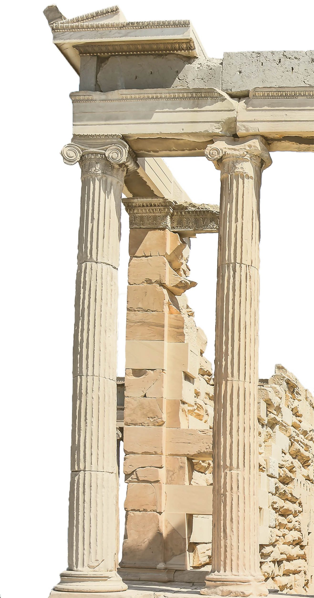
Matematyka - wielu kojarzy się ze skomplikowanymi, niezrozumiałymi wzorami, przydatnymi jedynie dla naukowców, lub słynnymi uczonymi, którzy żyli tak dawno, że ich odkrycia przecież nie mogą mieć wpływu na dzisiejsze życie. Dla innych - z frustrującym przymusem szkolnym, godzinami spędzonymi nad zeszytem, próbując nauczyć się kolejnego działu, który przecież "nigdy w życiu do niczego i tak się nie przyda". Jednak mało kto zdaje sobie sprawę z tego, jak matematyka przenika się z naszym codziennym życiem i jak wiele zawdzięczamy tym słynnym uczonym, ile istnień spośród przeróżnych cywilizacji dokładało cegiełki do przeróżnych dziedzin matematyki oraz jak wielkie dziedzictwo naukowe i kulturowe za nią stoi.
Niemal każdy z nas spotkał się ze stwierdzeniem, że matematyka jest królową nauk. I jest w tym wiele prawdy. Już sama etymologia tegoż słowa zdaje się to potwierdzać - "matematyka" pochodzi od greckiego μάθημα mathēma, znaczącego „nauka, lekcja, poznanie". Matematyka bowiem to nie tylko nauka o dodawaniu, odejmowaniu i liczbach. Pozwala ona opisywać otaczający nas świat, dostarczając ku temu narzędzi. Stanowi fundament dla wielu innych dziedzin nauki, począwszy od oczywistych przykładów jak fizyka czy informatyka, kończąc na socjologii czy ekonomii, które zaliczane są do nauk humanistycznych.
Jej historia nierozerwalnie łączy się z historią ludzkości - wspominały już o niej zapiski datowane na 35000 lat p.n.e. Rozwijana przez tysiące lat, dzięki wielkim umysłom wywodzącym się z przeróżnych cywilizacji, doprowadziła nas do momentu, w którym nauka rozwija się w niewyobrażalnym dotąd tempie. Właśnie temu poświęcona jest owa strona internetowa - historii matematyki, począwszy od czasów starożytnych, aż po współczesność oraz ludzi, dokładających kluczowe cegiełki do wiedzy, którą posiadamy dziś.
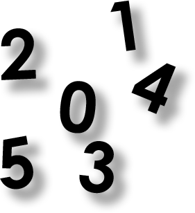
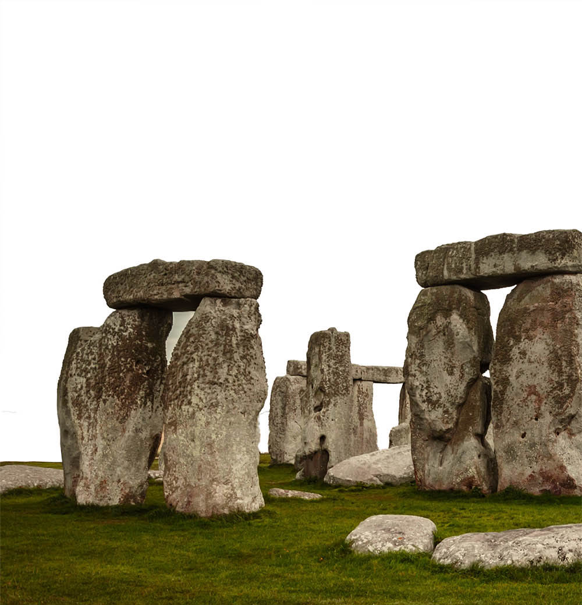
Ludzie potrafili wykonywać nieskomplikowane obliczenia praktycznie od zawsze. Pierwsze ślady liczenia odnaleźć można w gramatyce - wskazują na to liczebniki, których budowa i zasady użycia świadczą, że początkowo ludzie posiadali umiejętność określania liczebności małych zbiorów. Umiano określić, czy w zbiorze znajduje się jeden, dwa, czy trzy elementy. Większe postrzegano po prostu jako "wiele". Do dziś w Amazonii istnieją ludy zbieracko-łowieckie używające słów określających jedynie "jeden", "dwa", oraz "wiele". Żyjąc w świecie bez rozwiniętego handlu i rolnictwa, zwyczajnie nie potrzebują określeń na większe ilości.
Pierwsze archeologiczne źródła wskazujące na umiejętność abstrakcyjnego myślenia u ludzi datowane są już na 70 tysięcy lat - na odnalezionych w jaskini Blombos w południowej Afryce ochrowych skałach znajdowały się geometryczne wzory.
Nasi przodkowie starali się mierzyć zjawiska zachodzące regularnie, takie jak fazy księżyca, czy okres menstruacji. W różnych miejscach na świecie odnaleziono kości z nacięciami, wyglądającymi jak proste obliczenia, czy kalendarze.
Jaskinia Blombos
Jaskinia znajduje się w południowej Afryce, na terenie RPA. W 1991 rozpoczęto wykopaliska. Od tamtego czasu w jaskinii oprócz wyżej wspomnianej ochrowej skały znaleziono między innymi najstarsze znane rysunki na kamieniach, proste narzędzia wykonane z kości, czy koraliki stworzone ze skorupek ślimaków morskich. Z drobnych lokalnych wykopalisk Jaskinia Blombos zamieniła się w międzynarodowy projekt.
Widoczna na zdjęciu ciemnobrązowa kość strzałkowa pawiana nazwana kością z Ishango, datowana na 20 tys. lat charakteryzuje się widocznymi nacięciami pogrupowanymi w trzy rzędy, wykonanymi przez rybaków zamieszkujących wioskę, zniszczoną później przez erupcję wulkanu. Kość mogła służyć do zapisu systemu liczbowego, lub jako kalendarz księżycowy. Nie jest to jedyny odnaleziony artefakt tego typu.
Zdjęcie przedstawia glinianą tabliczkę - podstawowy nośnik pisma klinowego, będącego pierwszym na świecie systemem pisma wynalezionym przez Sumerów - lud zamieszkujący południową Mezopotamię. Jako rysika używano ściętą łodygę trzciny. Zapisaną tabliczkę następnie wypalano w celu utwardzenia. Dzięki temu do dnia dzisiejszego zachowało się więcej informacji o matematyce sumeryjskiej, niż np. egipskiej. Niektóre z zachowanych tabliczek wyglądają jak ocenione prace domowe z matematyki.
Tabliczka z wyrytym problemem geometrycznym należąca do szkoły dla skrybów, datowana na 2000 rok p.n.e. Babilończycy korzystali ze znajomości geometrii w budownictwie. Umieli obliczać pola prostokątów, trójkątów i trapezów, oraz objętości prostych brył, jak np. prostopadłościan, czy walec.
Na zdjęciu widoczna jest tabliczka przedstawiająca instrukcję jak śledzić ścieżkę Jowisza na niebie. Babilończycy potrafili obliczyć obecną pozycję Jowisza metodą trapezowania - polegała ona na obliczaniu przemieszczania się danego ciała na niebie jako obszaru w układzie współrzędnych, gdzie na jednej osi jest czas, a na drugiej prędkość, poprzez określenie powierzchni wykreślonego w ten sposób trapezu pod wykresem. Sądzono, że ten sposób obliczania odkryty został dopiero conajmniej 1400 lat temu. Technika ta dowodzi, że Babilończycy dobrze znali zaawansowane metody geometryczne i stosowali je m. in. w astronomii.
Historia matematyki zaczęła "przyśpieszać" wraz z wynalezieniem pisma. Wiele różnych cywilizacji rozsianych po całym świecie niezależnie wykształciło swoje odmienne systemy pisma. Umiejętność zapisywania pozwoliła przenosić matematyczne rachunki na różne nośniki, co pozwalało je zachować na dłużej i znacznie ułatwiało dzielenie się nimi - metoda ustna nie pozostawała już jedyną formą dzielenia się informacjami.
Mezopotamia, zwana często kolebką cywilizacji, była miejscem gdzie poraz pierwszy użyto koła, wynaleziono irygację, pług oraz - co kluczowe dla matematyki - pismo. Skuteczny system pisma i odporne na upływ czasu gliniane tabliczki sprawiły, że o matematyce Sumerów, nazywanej często babilońską ze względu na pochodzenie znacznej ilości źródeł - Babilon - wiemy stosunkowo duzo. Większość odnalezionych tabliczek datowana jest na okres 1800 - 1600 p.n.e. Dotyczyły one między innymi takich zagadnień jak równania kwadratowe i sześcienne, ułamki, czy obliczanie liczb naturalnych spełniających twierdzenie Pitagorasa.
Babiloński system liczbowy
Babiloński system liczbowy był systemem sześćdziesiątkowym. Do dziś widać jego pozostałości np. w podziale godziny na 60 minut, czy kąta pełnego na 360 (60 * 6).
Gliniana tabliczka nazywana Plimpton 322 datowana jest na okres około 1800 roku p.n.e. Zawiera cztery kolumny i 15 rzędów różnych liczb zapisanych pismem klinowym. Sugeruje, że Babilończycy znali twierdzenie Pitagorasa znacznie wcześniej, zanim urodził się sam Pitagoras.
Babilończycy tworzyli specjalne tabliczki, aby pomagać sobie w obliczeniach. Dwie tabliczki z kwadratami oraz sześcianami liczb odnaleziono w 1854 roku.
Egipcjanie już około 4800 lat p.n.e. korzystali z kalendarza, co samo w sobie wymusza znajomość podstaw matematyki. Wiadome jest, że 600 lat później używali kalendarza 365 dniowego, dzielącego się na 12 miesięcy po 30 dni + dodatkowe 5 dni. Około 3100 lat p.n.e. Egipcjanie umięli już korzystać z systemu liczb naturalnych, czego dowodzi zapis odnaleziony na królewskiej buławie mówiący o liczbie łupów wojennych zdobytych przez faraona: 120 000 więźniów, 400 000 wołów, 1 422 000 gęsi. O matematyce Egipskiej możemy mówić do okresu około 350 roku p.n.e., gdy Aleksander Macedoński podbijając Egipt ustanowił na jego terenach język Grecki. Od tamtej pory matematyka Egipcjan stopniowo pochłaniana była przez Grecką.
W matematyce egipskiej nie znajdziemy dowodów ani aksjomatów. Egipcjan, w przeciwieństwie do greków interesowała jedynie praktyczna strona matematyki, mająca zastosowanie w życiu. Szczególną uwagę poświęcali obliczaniu powierzchni i objętości różnych figur. Ich zainteresowanie pomiarami miało odbicie w praktyce - oprócz oczywistego przykładu jakim jest budownictwo, matematyka konieczna była przy podziale ziemi, wymuszanym przez częste wylewy Nilu.
Papirus Berliński 6619
Papirus Berliński datowany jest na około 1800 lat p.n.e. Jeden z zapisanych na nim problemów dowodzi, że starożytni Egipcjanie znali twierdzenie Pitagorasa. Jego treść brzmi: "Pole kwadratu wynosi 100 i jest równe polu dwóch mniejszych kwadratów. Krawędź jednego stanowi 1/2 + 1/4 krawędzi drugiego. Jakie są krawędzie dwóch mniejszych kwadratów?" Możemy zapisać to w postaci układu równań: $$\{\table x^2+y^2=100; x=3/4y$$ z którego wynika, że x = 6, oraz y = 8.
Matematyki możemy również dopatrzyć się w egipskich piramidach. Nachylenie słynnej piramidy Cheopsa jest bardzo zbliżone do nachylenia "złotego ostrosłupa". To, czy rzeczywiście piramidy celowo miały coś wspólnego ze złotym podziałem jest dyskusyjne, lecz pewnym jest że Egipscy matematycy potrafili wyznaczyć wzór na objętość piramidy: $$1/3·wysokość·szerokość$$Oprócz tego, Egipcjanie znali jeden z trójkątów pitagorejskich o bokach 3, 4 oraz 5. Korzystali z tego robotnicy pracujący przy obrabianiu kamiennych głazów - zawiązywali supły na linach w odstępach 3, 4 oraz 5 jednostek, aby odmierzyć perfekcyjny kąt.
Na zdjęciu widoczne są liczby zapisane za pomocą hieroglifów na ścianie w świątyni w Karnaku. Egipcjanie stosowali ten sposób zapisu aż do początku pierwszego tysiąclecia naszej ery.
Według jednej ze starożytnych egipskich opowieści bóg Set w walce wyrwał oko swojemu bratu, bogowi Horusowi i rozerwał je na części. Na szczęście, bóg Thot był w stanie poskładać oko z powrotem w całość. Na cześć powyższej opowieści, Egipcjanie zapisywali ułamki w postaci części oka Horusa: - prawa strona oka - 1/2 - źrenica - 1/4 - brew - 1/8 - lewa strona oka - 1/16 - "ogon" - 1/32 - "łza" - 1/64
Papirus Rhinda obok papirusu moskiewskiego jest dowodem na szeroką wiedzę matematyczną Egipcjan. Był swojego rodzaju podręcznikiem do arytmetyki i geometrii. Zawiera 87 zadań wraz z przykładami i rozwiązaniami z algebry, geometrii, postępu arytmetycznego, odwrotności oraz miar i wag.
Mezoameryka to teren rozpościerający się od środkowego Meksyku aż do Przesmyku Panamskiego. Na jego obszarze zrodziło się wiele odrębnych kultur, lecz dla rozwoju matematyki kluczowe były trzy: Olmekowie, Aztekowie, oraz Majowie. Choć to właśnie Majowie spośród wyżej wymienionych przyczynili się do postępu w matematyce, to i o ich dokonaniach wiemy stosunkowo niewiele. Wiele dokumentów przepadło w 1521 roku, gdy hiszpanie po podporządkowaniu sobie terenów Mezoameryki nakazali palenie wszelkich ksiąg podbitych ludów. Podobną pod tym względem politykę rozpoczął wiek wcześniej Tlacaelel, władca Azteków, który w 1428 roku zapoczątkował reformy mające na celu stworzenie mitologii "od początku" wedle jego nowej wizji - nakazał palić i skazał na zapomnienie wszystkie zapisane dotąd księgi. Taki sam los spotykał wszelkie źródła pisane podbitych ludów - były palone, a następnie zastępowane aztecką wersją rzeczywistości.
System liczbowy Majów
Majowie dość wcześnie wykształcili zaawansowany system liczbowy, pozwalający na zapisanie bardzo dużych wartości. Jako podstawę swojego systemu przyjęli liczbę 20 z dość prostego powodu - liczyli na palcach rąk i nóg. System Majów był systemem pozycyjnym, lecz w odróżnieniu od współczesnego używanego przez nas systemu dziesiątkowego zapisywany był pionowo, od góry do dołu.
Dzięki szerokiej wiedzy matematycznej i astronomicznej Majowie stworzyli precyzyjny i złożony kalendarz. Składał się z trzech systemów zapisu dat: tzw. długiej rachuby, kalendarza Tzolkin oraz kalendarza Haab (widocznego na zdjęciu). Inne cywilizacje Mezoameryki, jak np. Aztecy zaadaptowali kalendarz Majów, dokonując w nim jedynie nieznacznych zmian.
El Castillo to piramida wzniesiona przez Majów w centrum starożytnego miasta Chichén Itzá. Z badań wynika, że budowniczy musieli dysponować szeroką wiedzą matematyczną, geometryczną i astronomiczną. Podczas wiosennej i jesiennej równonocy narożnik piramiody rzuca cień w kształcie węża na północną ścianę budowli. Wraz z zachodzącym słońcem zmieniający się cień daje efekt wijącego się węża.
Oprócz tego, istnieją teorie że piramida ma związek z kalendarzem majów. Każde z czterech schodów ma 91 schodów, co łącznie daje 364. Dodając do tego szczyt uzyskamy 365, czyli liczbę dni w roku kalendarza słonecznego. Budowla posiada również 52 uwydatnione płyty, czyli tyle, ile lat ma toltecki cykl. Natomiast każda z 9 platform dzieli się schodami na 2 części, dając liczbę 18, czyli liczbę miesięcy w kalendarzu Majów.
Na zdjęciu widoczne jest obserwatorium El Caracol na terenie prekolumbijskiego miasta Chichen Itza. Majowie korzystali z niego do obserwacji zachodzących na niebie zjawisk. Używając tak prymitywnych przyrządów jak np. dwa patyki ułożone w kształt krzyża pod odpowiednim kątem byli w stanie bardzo dokładnie wyznaczyć długość miesiąca księżycowego na 29,5308 dni- dzisiejsza rzeczywista wartość wynosi 29,53059 dni.
Kodeks Drezdeński datowany jest na lata 1200 - 1250, choć prawdopodobnie jest jedynie kopią wcześniejszego dokumentu pochodzącego z okresu V - IX wieku. Jako jedynemu ze wszystkich czterech kodeksów udało się przetrwać czas palenia ksiąg przez hiszpańskie duchowieństwo. Został wysłany do Europy w hołdzie królowi Hiszpanii. Zmieniając kilkukrotnie właścicieli, ostatecznie w 1744 trafił w ręce dyrektora Królewskiej Biblioteki Saksonii i został przewieziony do Drezna - stąd jego nazwa.
Kodeks Drezdeński wykonany został na wygładzonej korze figowca pokrytej pastą z lipy. Zapisany po obu stronach przez ośmiu skrybów (świadczą o tym odmienne style pisma i poruszane tematy w poszczególnych częściach kodeksu), liczy sobie aż 74 strony. Można go złożyć w formę harmonijki. Artefakt zachował się do dnia dzisiejszego w dobrym stanie - oprócz hieroglifów możemy ujrzeć na nim wyraźne obrazki, na których dominuje kolor czerwony, czarny oraz błękitny. Nieznacznemu uszkodzeniu uległ podczas bombardowania Drezna, za czasów II wojny światowej.
Kodeks Drezdeński jest również bogatym świadectwem szerokiej wiedzy matematycznej Majów. Zawiera bardzo precyzyjne obliczenia astronomiczne i różne rachunki pomocne w proroctwach i obrzędach religijnych. Majom udało się wyznaczyć czas obrotu Ziemi dookoła Słońca na 365,242 dni. Dla porównania, współczesna wartość mierzona za pomocą dokładnych przyrządów wynosi 365,242198 dni - Majowie nie pomylili się zatem nawet w jednej tysięcznej. Znaleźć w nim możemy również dwie astronomiczne i astrologiczne tabele, w tym jedną dotyczącą ruchu planety Wenus i zaćmień słońca. Astronomia miała duże znaczenie w ogólnej kulturze Majów, co wymuszało przeprowadzanie różnych tego typu obliczeń.
Widoczna na zdjęciu stela datowana jest na późny okres preklasyczny (600 r. p.n.e. - 150 r. p.n.e.). Jest to jeden z najdłuższych zachowanych tekstów prekolumbijskich. Odnaleźć na nim możemy dwie daty zapisane w długiej rachubie, odpowiadające latom 143 i 156 w kalendarzu gregoriańskim.
Aztecy podobnie jak Majowie korzystali z dwudziestkowego systemu liczbowego, lecz w odróżnieniu od Majów nie posiadali symbolu dla zera, choć znali jego koncept. Ich system zapisu nie był pozycyjny, podobnie jak w systemie egipskim jedną liczbę można było zapisać na kilka sposobów - kolejność znaków nie miała znaczenia - wartości im odpowiadające po prostu sumowano.
Na zdjęciu widoczny jest aztecki dokument przedstawiający wielkości działek należących do ludności.
Zdjęcie: Library of Congress
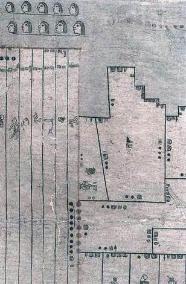
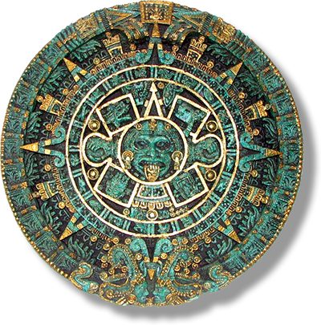
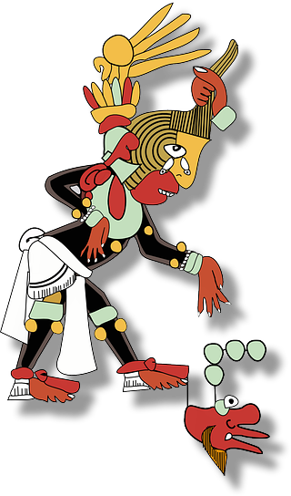
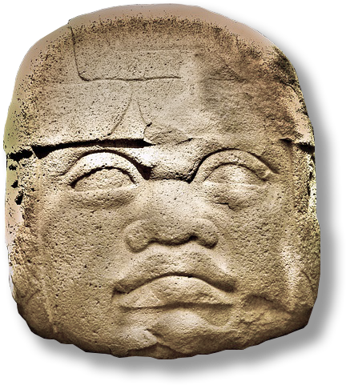
Peru zamieszkiwane było przez wiele kultur: Caral, Chavin, Nazca, Mochica oraz Inków. Jednak żadna z nich jak dotąd nie została głębiej poznana. Ludy zamieszkujące tereny Peru - w tym Inkowie, którym szczególnie poświęcimy uwagę - nigdy nie wykształciły pisma podobnego do takiego, które wyobrażamy sobie mając w głowie słowo "pismo". Korzystaly one za to z oryginalnego systemu przekazywania informacji, zwanym pismem węzełkowym, lub kipu (w języku używanym przez Inków "kipu" znaczy po prostu węzeł). Ów system przekazywał informację poprzez sposób zawiązania węzełków, ich ilości, odległości od siebie, a nawet koloru użytych nici.
Pomimo - jakby mogło się zdawać - prymitywności kipu, imperium Inków rozrosło się do ogromnych rozmiarów, szczyciło się rozwiniętym systemem dróg, efektywnym rolnictwem i skuteczną administracją. Wszystko to oczywiście możliwe jest do osiągnięcia bez używania pisma w podobnej formie do tego, jakie znamy dziś, lecz dojście do takiego poziomu rozwoju wymaga przeprowadzania różnych obliczeń. Okazuje się, że i z matematyką Inkowie radzili sobie za pomocą kipu.
Yupana
Yupana prawdpodobnie służyła Inkom jako liczydło. Obliczenia przeprowadzano odpowiednio układając na niej kamyki. Gdy pod ręką nie było yupany, kamyki układano po prostu na ziemi, następnie wyniki obliczeń zapisywano następnie na kipu.
O kalendarzu Inków niewiele wiadomo, lecz większość naukowców i historyków twierdzi, że do zapisu dat Inkowie również używali kipu.
Ich rok składał się z 12 miesięcy, każdy po 30 dni. Każdy miesiąc dzielił się na 3 tygodnie po 10 dni. Ostatni dzień tygodnia był dniem "handlowym", tego dnia Inkowie mogli zamienić swoje dobra na inne (w państwie Inków działał barter).
Oprócz tego Inkowie korzystali jeszcze z kalendarza księżycowego, w którym rok trwał 328 dni.
Kipu (hiszp. quipu) to forma zapisu z wykorzystaniem sznurka. Pismem węzełkowym posługiwały się ludy zamieszkujące tereny Ameryki Południowej, ale również i kultury z dalekiego wschodu - Chińczycy, Koreańczycy oraz ludzie zamieszkujący wyspy Riukiu, niedaleko Japonii.
Na zdjęciu widoczna jest postać trzymająca kipu oraz yupana w lewym dolnym rogu.
Samo zdjęcie przedstawia jedną ze stron kroniki El primer nueva crónica y buen gobierno, autorstwa Felipe Guaman Poma de Ayala, który opisywał w niej historię i kulturę cywilizacji Inków, oraz ostro krytykował politykę prowadzoną przez króla Hiszpanii na podbitych terenach. Autor mając nadzieję na jej zmianę dedykował kronikę właśnie królowi Hiszpanii, lecz nie ma żadnych dowodów, by ta rzeczywiście do niego dotarła.
Dziewięć rozdziałów o sztuce matematyki było najważniejszym dziełem odtworzonym na podstawie spalonych z rozkazu cesarza prac. Zawarte w nim było 246 opisanych słownie problemów, podzielonych tematycznie na 9 tytułowych rodziałów.
Poruszane zagadnienia dotyczyły takich rzeczy jak handel, rolnictwo, zastosowanie geometrii w obliczaniu proporcji chińskich pagod, budowy wież, inżynierii oraz pomiarów geodezyjnych.
Oprócz tego, w Dziewięciu rodziałach chińscy matematycy opisali wyznaczanie liczby pi i rozwiązywanie trójkątów prostokątnych, oraz wykorzystali zasadę Cavalierego na ponad tysiąc lat przed jej "odkryciem" przez Cavalierego na zachodzie. W dziele znaleźć możemy również dowód twierdzenia Pitagorasa oraz wzór na eliminację Gaussa.
Do Dziewięciu rozdziałów o sztuce matematyki chiński matematyk Liu Hui w 264 roku opublikował komentarz, w którym między innymi ustalił przybliżoną wartość dla liczby pi na 3,14159 stosując metodę Archimedesa dla wieloboków o 3072 bokach.
Od IV wieku p.n.e. system liczbowy zawarty w jiaguwen zaczął być wypierany przez patyczki liczbowe, gdy do powszechnego użytku zaczęły wchodzić "plansze do liczenia". Plansza miała formę szachownicy podzielonej na rzędy i kolumny, na której układane były patyczki. Chcąc zapisać na niej daną liczbę na odpowiednich polach, zaczynając od prawej strony, układano liczbę jedności, dziesiątek, setek, itd. Taki system zapisu był zatem systemem pozycyjnym.
Patyczki liczbowe używane były nie tylko w Chinach - korzystali z nich również matematycy japońscy, koreańscy i wietnamscy. Na zdjęciu widzimy japoński podręcznik do matematyki przedstawiający problem zapisany za pomocą patyczków liczbowych.
Zasadę Gougu, czyli właściwie twierdzenie Pitagorasa "w wersji chińskiej" znaleźć możemy w Zhoubi suanjing - najstarszym kompletnym tekście datowanym na okres pomiędzy 100 r. p.n.e. a 100 r. n.e. Oprócz tego, dzieło mówiło między innymi o obliczeniach z ułamkami o wspólnych mianownikach.
W matematyce chińskiej popularne były różnego rodzaju łamigłówki i zagadki, oraz magiczne kwadraty, którego przykład widzimy na zdjęciu. Magiczny kwadrat to tablica o takiej samej liczbie kolumn i wierszy, w której każda komórka zawiera taką liczbę całkowitą, aby suma wartości liczb w każdej kolumnie, wierszu oraz obu przekątnych była taka sama.
Konkretnie na zdjęciu widzimy Luoshu, magiczny kwadrat stosowany w sztuce feng shui. Przedstawiony za pomocą cyfr arabskich wyglądałby następująco: $\table 4, 9, 2; 3, 5, 7; 8, 1, 6$
V oraz VI wiek poprzedzał okres stagnacji chińskiej matematyki. Astronom oraz matematyk Zu Chongzi, urodzony w 429 r. podał przybliżenie liczby pi na 3,1415926 < π < 3,1415927, które pozostało najdokładniejszym przybliżeniem na kolejne ponad 900 lat. Zasugerował również używanie przybliżeń 355/113 lub 22/7 w rachunkach nie wymagających ogromnej dokładności. Oprócz tego, Zu Chongzi wyznaczył długość roku na 365,24281481 dni (365,24219878 jest wartością współczesną), czy np. wzór na objętość kuli - $$(πD^3)/6$$, gdzie D jest średnicą - będący odpowiednikiem znanego wszystkim $$4/3πR^3$$.
W V wieku za sprawą Xiahou Yanga wprowadzony zostaje zapis liczb w systemie dziesiętnym korzystając z dodatnich i ujemnych potęg dziesiątki. Niedługo potem, Zhang Quijian pokazuje na przykładach w jaki sposób sumować ciąg liczbowy. VI wiek natomiast był okresem ożywionego handlu między Chinami a Indiami, co w połączeniu z działalnością buddyjskich misjonarzy skutkowało pojawieniem się tłumaczeń prac indyjskich, np. dzieł Brahmagutpy, oraz podział kąta na 360 stopni i tablice wartości sinusa kątów od 0 do 90 stopni. Matematyka indyjska mimo wszystko nie miała dużego wpływu na kierunek matematyki chińskiej.
Traktat matematyczny w dziewięciu częściach
Shushu jiuzhang, czyli Traktat matematyczny w dziewięciu częściach opublikowany został przez Quina Jiushao, matematyka, którego żywot przypadał na lata 1202 - 1261, czyli złoty wiek dla chińskiej matematyki. W swoim dziele porusza on takie kwestie jak kalendarz, obliczanie pól figur, badanie trójkątów prostokątnych, czy słynny chiński problem reszty. Oprócz tego, w Shushu jiuzhang zawarte było mnóstwo "praktycznych" problemów, dotyczących życia codziennego i nie tylko.
Na przykład, problem "pomiaru okrągłego fortu z odległości" zawiera równanie: $$x^10+16x^8-72x^6-864x^4-11664x^2-34992=0$$. Inny z kolei rozwiązuje równanie z ujemnym współczynnikiem: $$-x^4+763220x^2-40642560000=0$$. W problemie "naprawa fortu i ustawianie podatków" autor podaje 180 różnych możliwych rozwiązań.
Cywilizacja Chińska przez wiele wieków była odizolowana od reszty świata. Wpływały na to różne czynniki, jak np. oddzielenie Chin przez granice naturalne, takie jak otaczające je góry i morza. Dzięki temu kultura Chińska była wyjątkowa i niezależna od innych cywilizacji.
O matematyce starożytnych Chin nie wiemy zbyt wiele przez politykę cesarza Qin Shi Huanga, który w 213 r p.n.e. rozkazał spalić wszystkie książki niezgodne z ówczesną filozofią legizmu, oraz mordować konfucjańskich uczonych. Zapoczątkowania przez niego polityka realizowana była przez kilka kolejnych lat, czego skutkiem była utrata niezliczonych dzieł chińskiej kultury, w tym również źródeł zawierających informacje o matematyce chińczyków. Niektóre zniszczone książki starano się odtwarzać z pamięci, lecz za to również groziła kara śmierci.
Najstarszymi chińskimi artefaktami związanymi z matematyką, które przetrwały do dnia dzisiejszego są kości wróżebne zapisane pismem zwanym Jiaguwen, zawierającym system liczbowy podobny do dziesiętnego, za wyjątkiem braku w nim cyfry zero. Większość z odnalezionych kości wróżebnych, najczęściej skorup żółwi lub kości osłów, przypada na okres dynastii Shang (1600 r p.n.e. - 1046 p.n.e.).
Chińska matematyka, podobnie np. do matematyki starożytnego Egiptu, była skoncentrowana na praktycznych zastosowaniach. Brak w niej aksjomatów i abstrakcji, jak np. w matematyce greckiej. Matematyka chińczyków związana głównie była z kwestiami pomiaru ziemi, własności, obliczania wysokości podatków, kalendarza, architektury, handlu, czy astronomii. Dowodem na powszechne wykorzystasnie matematyki w życiu codziennym może być na przykład fakt, że już około 400 lat p.n.e. w chińskich szkołach nauczana była na pamięć tabliczka mnożenia 9·9.
Jiaguwen
Jiaguwen to inskrypcje, które za czasów dynastii Shang ryto na skorupach żółwi i kościach zwierzęcych. Pismo Jiaguwen zawierało rozwinięty system liczbowy, lecz brak w nim było zera, czy "pustego miejsca", którym inne systemy liczbowe często oznaczały zero.
Suanpan jest tradycyjnym chińskim abakiem, czyli swojego rodzaju liczydłem. Był urządzeniem wszechstronnym i pozwalającym na szybkie przeprowadzanie działań arytmetycznych. Za jego pomocą wykonać można było mnożenie, dzielenie, dodawanie, odejmowanie, pierwiastkowanie kwadratowe i sześcienne.
Matematyk Jia Xian w środku XI wieku, w okresie stagnacji chińskiej matematyki przypadającej na okres lat 700 - 1300 n.e. zaprezentował swój trójkąt, będący właściwie trójkątem Pascala - tyle, że na sześć wieków zanim Pascal przyszedł na świat. Razem z trójkątem Jia Xiana wiązały się metody liczenia pierwiastków dowolnego stopnia na suanpanie.
Trójkąt Pascala jest trójkątną tablicą liczb, w której na bokach znajdują się liczby 1, a pozostałe są sumą dwóch liczb znajdujących się bezpośrednio nad nią. Liczby znajdujące się w n-tym wierszu to kolejne współczynniki dwumianu Newtona, czyli rozwinięcia $$(a+b)^n$$, np:
XIII wiek, choć był okresem ekspansji imperium mongolskiego i najazdu Czyngis-chana na Chiny - był również złotym wiekiem dla matematyki chińskiej. Właśnie wtedy conajmniej ośmiu uczonych opublikowało ponad piętnaście tekstów matematycznych.
Oprócz Qina Jiushao, autora Traktatu matematycznego w dziewięciu częściach, w tamtym okresie tworzył również Li Chi, badający opisywanie i wpisywanie okręgu w trójkąt, Yang Hui, opisujący dzielenie, mnożenie, pierwiastkowanie, ciągi, obliczający powierzchnię różnych figur, równania kwadratowe, oraz badający magiczne kwadraty sięgające rozmiarów 10 x 10, Guo Shoujing, zajmujący się interpolacją wyższych rzędów, czyli przybliżone wartości funkcji w przedziale między podanymi wartościami, oraz Zhu Shijiei, uzywający liczby zero.
Wiele dokonań Chińczyków ponownie odkrytych zostało dopiero setki lat później na zachodzie, takich jak macierze, trójkąt Pascala, regułę trzech, chińskie twierdzenie o resztach, liczby ujemne, czy dwumian Newtona. Warto również wspomnieć o Shenie Kuo, wszechstronnie wykształconym uczonym żyjącym w latach 1031 - 1095, który stosował m.in. rachunek różniczkowy, trygonometrię, metrologię, permutacje, oraz zajmował się praktycznymi problemami: obliczył minimalny rozmiar wolnej przestrzeni potrzebny do rozwinięcia danych formacji bitewnych i najdłuższą możliwą kampanię militarną przy określonych zapasach żywności.
Po XIII wieku rozpoczyna się jednak powolny upadek matematyki chińskiej aż do końca XV wieku, gdzie wpływy matematyki zachodniej stają się silniejsze, a odrębność i wyjątkowość matematyki chińskiej zaczyna się coraz szybciej zatracać.
Wedy i Sulbasutry
Sulbasutry dołączane były do Wed jako przypisy ze wskazówkami dotyczącymi budowy ołtarzy - aby składana na nich ofiara przyniosła łaskę bogów, sam ołtarz musiał być zbudowany bardzo dokładnie. W okresie starożytności stanowiły one główne źródło wiedzy matematycznej. Znaleźć na nich możemy takie informacje jak dokładne (jak na tamte czasy) przybliżenie liczby pi, wszystkie cztery operacje matematyczne, oraz rozwinięty system liczbowy. W końcowej części okresu wedyjskiego w matematyce indyjskiej, w astronomicznych pracach zwanych siddhantami po raz pierwszy pojawia się idea funkcji trygonometrycznych.
Wraz z powolnym odchodzeniem od religii wedyjskiej, na jej miejsce wchodzić zaczął dżinizm, który swój ślad zostawił również na indyjskiej matematyce. W religii dżinistycznej dużą rolę odgrywały wielkie liczby, co wymuszało na kapłanach biegłość w matematyce. Podstawową umiejętnością duchownych była znajomość sankhyany - nauki o liczbach w skład której wchodziła arytmetyka i astronomia.
Datowany na okres około 200 r p.n.e. - 200 r n.e. zawiera równania pierwszego stopnia z pięcioma niewiadomymi, liczby ujemne, oraz sposoby przybliżonego obliczania pierwiastków kwadratowych z dowolnych liczb dodatnich. Co ciekawe, znaleźć na nim możemy poraz pierwszy zero, zapisane w postaci kropki. Późniejsze zapisy zera pojawiały się już jako owal.
O Varahamirze wiemy stosunkowo niewiele. Obok Aryabhaty, był jedną z ważniejszych postaci w matematyce tamtego VI wieku. Jego najsłynniejsza praca, Pancasiddhantika datowana na 575 r. jest zbiorem wiedzy astronomicznej i matematycznej.
Obok Aryabahty, Brahmagupta (598-670) był kolejnym wielkim indyjskim matematykiem okresu klasycznego. Był autorem dzieł, które następnie wywarły duży wpływ na dalszą matematykę nie tylko indyjską, lecz również arabską i w mniejszym stopniu chińską: słynnego Brahmasphutasiddhanta oraz Khandakhayaka. Jego wybitności dowodzi fakt, że pojął działanie systemu liczbowego lepiej, niż ktokolwiek przed nim. Zaprezentował nowe sposoby mnożenia i operacje z użyciem zera. Jako pierwszy również próbował dzielić przez zero i udowodnić, że $$n/0 = ∞$$.
Bhaskara II, którego żywot przypadał na lata 1114-1185 był jednym z najwybitniejszych matematyków indyjskich. Oprócz napisania swojego głównego dzieła - Siddhanta siromani, przypisuje mu się przybliżenie liczby pi na 3,141666, oraz rozwiązanie równania 61x2 = y2+1, gdzie uzyskał efektowny wynik x = 226153980, y = 1766319049.
Historia indyjskiej matematyki sięga aż ponad 2000 lat p.n.e. Najstarsze znaleziska kierują nas do doliny Indusu, gdzie aż do około 1700 r. p.n.e. rozwijała się cywilizacja Indusu (nazywana również cywilizacją Harappańską od stanowiska archeologicznego na któym dokonano związanych z nią odkryć), posługująca się własnym pismem składającym się z aż około 500 znaków, oraz systemem miar i wag. Odnalezione zostały odważniki tworzące zbiór wag o charakterze dziesiętnym, kolejno 0,05, 0,1, 0,2, 0,5, 1, 2, 5, 10, 20, 50, 100, 200, oraz 500 jednostek. Odkryte zostały również skale do pomiaru długości, m. in. skala dziesiętna, w której podstwową jednostką było 1,32 cala (3,35 centymetra), nazwana potem "calem induskim", lub pręty z brązu długości 0,367 cala (0,932 centymetra). 100 takich prętów daje długość około 1 metra, czyli około tyle, ile wynosi jeden krok. Harappanie korzystali ze swoich systemów miar i wag np. w budownictwie, wykonując precyzyjne pomiary.
Przyszedł jednak czas, gdy cywilizacja Indusu zaczęła upadać. Nie jest do końca jasne co może być tego powodem, istnieją różne teorie: zmiany klimatyczne przynoszące nieurodzaj, epidemia, powódź lub długotrwała susza, czy najazd Indo-Aryjskich ludów z północy (dzisiejszych terenów Iranu). Próżnię po cywilizacji Indusu w latach 1500-800 p.n.e. zaczęła zapełniać nowa kultura, która przyniosła nam Wedy - pierwsze źródła pisane o charakterze religijnym, spisane wedyjskim sanskrytem.
To właśnie z Wedami wiąże się dalszy rozwój indyjskiej matematyki, a dokładniej z Sulbasutrami - dołączanymi do Wed przypisami, zawierającymi instrukcje jak budować ołtarze. Matematyka w tamtym okresie rozwijała się zatem głównie dla praktycznych i religijnych zastosowań. Głównymi autorami Sulbasutrów byli Baudhayana (około 800 r. p.n.e.), Manava (około 750 r. p.n.e.) i Katyayana (około 200 r. p.n.e.).
Indyjski system liczbowy
To właśnie od indyjskiego systemu pochodzi większość dzisiejszych pozycyjnych dziesiętnych systemów liczbowych - właśnie w Indiach bowiem powstała koncepcja numerologii pozycyjnej (co prawda Babilończycy wcześniej używali systemu pozycyjnego, lecz ich system za liczbę bazową brał 60, natomiast system indyjski był dziesiętny). Cyfry indyjskie są w zachodniej kulturze znane jako arabskie, ponieważ w średniowieczu to właśnie arabowie rozprzestrzenili je w Europie. Swój wkład miał w tym perski matematyk Al-Chuwarizmi, popularyzując ów zapis.
Matematyka dżinistyczna i wedyjska skupiona była wokół religii. Okres klasyczny przyniósł zmianę w tym temacie - większość matematyków żyjących w jego czasie była astronomami, ich prace również w znacznej większości poruszały tematy związane mniej lub bardziej z astronomią.
Matematyka klasyczna swój początek miała około 400 r. n.e. Jednym z najważniejszych dzieł tego okresu jest opublikowany przez Aryabhatę (którego pomnik widzimy na zdjęciu) około 500 r. Aryabhatiya - traktat astronomiczny, który podsumowywał całą dżinistyczną matematykę. Ów traktat, podobnie jak cała matematyka indyjska nie zawierał żadnych dowodów matematycznych, brak w nim nawet idei dowodu matematycznego. Znaleźć można było w nim trygonometrię (której autor używał do swoich astronomicznych obliczeń), tabelę wartości funkcji sinus, a także pierwiastkowanie i równania kwadratowe. Aryabhata podał również wartość liczby pi na 3,1416, zaznaczając przy tym, że jest to jedynie przybliżenie, oraz rozwiązał równanie ax - by = c.
Mahavira, żyjący w IX wieku, był jedynym matematykiem indyjskim wspominającym o elipsie. Około roku 850 opublikował również Ganitasar Sangraha - dzieło, w którym arytmetyka opisana jest poraz pierwszy w formie bliskiej do tej, która używana jest współcześnie.
Po śmierci Bhaskary II w matematyce indyjskiej nastąpił zastój. Nie licząc pojedynczych mniejszych dzieł, trzeba było czekać aż 200 lat na kolejne znaczące prace matematyczne. "Złą passę" przełamał Madhawa - matematyk pochodzący z Kerala (stan indyjski), którego dziełami następnie inspirowali się tacy matematycy jak Nilakantha, czy Jyasthadeva, tworząc Keralską Szkołę Astronomii i Matematyki. Właśnie dzięki "uczniom" Madhawy i ich wspominkach wiemy o nim samym i o jego dokonaniach - wszystkie jego matematyczne zapiski zostały utracone.
Do jego dokonań należy m.in. rozwinięcie funkcji w nieskończony szereg, czego Europejczycy dokonali dopiero w XVIII wieku (takowe rozwinięcie nazywane jest dziś szeregiem Taylora), oraz wiele innych.
W pierwszym tysiącleciu przed naszą erą Grecy nie posiadali jednego "narodowego" systemu liczbowego. Ze względu na geografię i polityczne rozbicie kraju na mniejsze polis, systemów było wiele, różniących się mniej lub bardziej od siebie. Liczby wtedy swoje główne zastosowanie znajdywały w handlu.
Pitagoras jest postacią, o której słyszał chyba każdy. Prawdopodobnie najsławniejszy ze wszystkich greckich matematyków i jeden z najsławniejszych żyjących kiedykolwiek. Pitagoras wraz ze swoim mistrzem Talesem byli uczonymi, którzy praktycznie dali początek greckiej matematyce. Żył w latach około 582 p.n.e. - 507 p.n.e. Obficie podróżował, dzięki czemu zdobył ponadprzeciętną wiedzę. Celem jego wypraw był głównie Egipt, gdzie pobierał nauki od duchownych. Zainspirowany tamtejszą matematyką, po powrocie do ojczyzny w Krotonie założył szkołę pitagorejczyków, pod wieloma względami przypominającą sektę. Nauczał w swoim domu, jako uczniów wybierając osoby zdolne do milczenia, które były w stanie zachować jego nauki w tajemnicy.
Platon nie był typowym matematykiem - zdecydowanie większe zasługi przypisać można mu w dziedzinie filozofii. Założył Akademię Platońską, której celem było wszechstronne doskonalenie serca i umysłu poprzez dążenie do poznania prawdy.
Jego szkoła odcisnęła również ślad na ówczesnej matematyce. Platon wprowadził ścisły kanon metodologiczny, w myśl którego dozwolone konstrukcje geometryczne prowadzone mogły być jedynie przy użyciu cyrkla i linijki, co argumentował tym, że "jedynie linia prosta i okrąg mogą ślizgać się samo po sobie". Taki rodzaj konsktrukcji istnieje do dziś, nosząc nazwę konstrukcji platońskich.
Nad wejściem do jego budynku swojej akademii Platon napisał "Medeis ageometretos eisito mu ten slegen" - Nikt, kto nie umie geometrii, nie ma wstępu do mego domu.
Archimedes był jednym z największych, jeśli nie największym greckim matematykiem. Żył w latach około 287 p.n.e. - 212 p.n.e. i studiował w Aleksandrii, podobnie jak Euklides, którego nauki z pewnością nie były mu obce, bowiem był w bliskich kontaktach z jego uczniami, z którymi prowadził korespondencję przez całe życie.
Oprócz posiadania wybitnej wiedzy matematycznej, Archimedes zyskał sławę jako konstruktor wielu genialnych maszyn i mechanizmów, zarówno cywilnych jak i wojskowych, dzięki którym m. in. Grecy zyskali przewagę w boju przeciwko Rzymianom.
Hipparchos, zwany również Hipparchem żył w latach 190 p.n.e. - 120 p.n.e. Razem z Ptolemeuszem uważani są za prekursorów trygonometrii, tworząc tablicę cięciw okręgu - równoważną do tablicy funkcji trygonometrycznej sinus. Oprócz tego, Hipparchos był wybitnym astronomem, współtwórcą naukowych podstaw astronomii.
Diofantos, ostatni ważny grecki matematyk żyjący w latach około 210 n.e. - 290 n.e. znany jest przede wszystkim ze swojego dzieła Arithmētika (Arytmetyka), w którym zapisał nowe sposoby rozwiązywania równań aż do trzeciego stopnia. Uznaje się go za pierwszego matematyka, który stosował zsystematyzowanego języka algebraicznego, m. in. używając znaku odejmowania. Swoje życie spędził w Aleksandrii, gdzie schronił się po podbiciu Grecji przez Rzymian.
Spośród różnych kultur i cywilizacji matematyka grecka jest zdecydowanie tą "najpopularniejszą". Gdybyśmy zapytali losową osobę o wielkich matematyków, z ogromnym prawdopodobieństwem usłyszelibyśmy o Pitagorasie, Euklidesie, czy Archimedesie. Owa popularność oczywiście nie jest nieuzasadniona - Grecy przysłużyli się dla matematyki jak żadna inna cywilizacja. Choć początkowo inspirowali się dokonaniami Egipcjan i Babilończyków, grecka matematyka szybko wykształciła swój własny styl i kierunek. W odróżnieniu od indyjskiej - w greckiej popularne były formalne dowody opierające się na zasadach logiki.
Zachowało się niewiele oryginałów prac greckich uczonych. Najstarsze z nich datowane są na okres rzymski. Przetrwało jednak mnóstwo kopii i różnych odpisów, dzięki czemu o matematyce Greków wiemy nieporównywalnie więcej, niż w przypadku innych cywilizacji.
Głównymi zagadnieniami, na których skupiali się greccy matematycy była geometria, oraz w późniejszych latach stereometria, w szczególności wyróżnić możemy trzy wielkie problemy: konstrukcja trysekcji kąta (czyli podzielenie kąta na trzy równe części), kwadratura koła (wyznaczenie kwadratu o polu równym polu danego koła) oraz podwojenie sześcianu (zbudowanie sześcianu o dwukrotnej objętości względem podanego).
Tales z Miletu
Pochodzący z Miletu Tales, żyjący w latach około 624 p.n.e. - 546 p.n.e. był pierwszym znanym greckim matematykiem oraz mistrzem Pitagorasa. Wiedzę zdobywał w podobny sposób do swojego słynnego ucznia, podróżując do Egiptu, gdzie uczył się geometrii i Babilonii, w której w tamtejszym czasie astronomia przeżywała ponowny rozkwit. Talesa charakteryzowało praktycznie podejście do matematyki. Swoich twierdzeń nie udowadniał matematycznie, lecz pokazywał, że w wielu przypadkach się sprawdzają. Zapoczątkował szkołę milezyjską, której uczniowie, m. in. Anaksymander i Anaksymenes kontynuowali filozofię mistrza.
Arystoteles żyjący w latach 384 p.n.e. - 322 p.n.e. jest jednym z trzech - obok Platona i Sokratesa - najsławniejszych filozofów greckich. Nie miał żadnych typowo matematycznych zasług, lecz należy docenić jego wpływ na usystematyzowanie logiki. Dał podstawy do rozwoju logiki jako odrębnej dyscypliny badawczej rozwijając takie zagadnienia jak definiowanie, wnioskowanie indukcyjne, klasyfikowanie logiczne, czy kluczowe dla matematyki pojęcie dowodu. Podzielił geometrię na część czysto teoretyczną i praktyczną - geodezję.
Euklides, żyjący w latach około 365 p.n.e. - 270 p.n.e. był jednym z pierwszych uczniów szkoły Platona, oraz wybitnym matematykiem III wieku p.n.e., nazywanego "złotym" okresem greckiej matematyki. Przez większość życia tworzył w Aleksandrii, która po śmierci Aleksandra Wielkiego stała się naukowym ośrodkiem, stolicą wielonarodowego imperium, z którego inne kultury czerpać mogły wiedzę greckich uczonych.
Był autorem wielu prac, które łączyły w całość i podsumowywały odkrycia z danych dziecin matematyki. Przekazywał wiedzę w sposób wybitnie aksjomatyczny i dedukcyjny, dopatrzyć możemy się w nim metod logiki Arystotelesa. Zdecydowanie najważniejszym jego dziełem jest Stoicheia geometrias, czyli "Elementy geometrii", będące zbiorem dotychczasowej wiedzy o geometrii. Owa praca miała ogromny wpływ na późniejszą matematykę europejską, stając się powszechnym podręcznikiem niemal do końca XIX wieku, czyli na kolejne dwa tysiące lat. Elementy były tłumaczone na liczne języki - na więcej przetłumaczona została jedynie Biblia.
Żyjący w latach około 100 n.e. - 168 n.e. Klaudiusz Ptolemeusz był wszechstronnie wykształconym greckim uczonym. Najważniejsze jego dzieła dotyczyły geografii i matematyki. We "Wstępie do geografii" instruował w jaki sposób należy tworzyć mapy, natomiast jego "Nauki geograficzne" mówiły o położeniu ponad trzech tysięcy miejscowości - w tym tych leżących na terenach dzisiejszej Polski, m. in. Kalisz, czy Jaćwież. Jego mapy jednak w pewnych miejscach były dość niedokładne, ponieważ głównie opierał się na opowieściach żeglarzy i kupców podróżujących po świecie, które często bywały przekoloryzowane.
Najważniejszym jego dziełem był Mathematikes Sýntaxeos (Matematyczny Zbiór), który za pośrednictwem Arabów dotarł do Europy pod tytułem Almagest i pozostawał podstawowym podręcznikiem naukowym aż do czasów Kopernika.
Kiedy w Europie panował zastój cywilizacyjny, świat islamu prężnie się rozwijał. Historia arabskiej matematyki zaczyna się około IX wieku, kiedy to panująca dynastia Abbasydów przenosi stolicę islamskiego imperium z Damaszku do Bagdadu. Kalif Harun al-Rashid, będący piątym kalifem z dynastii Abbasydów po objęciu władzy w 786 roku wraz ze swoim następcą al-Ma'munem silnie wspierali rozwój nauki. Z ich polecenia w Bagdadzie powstał Dom Mądrości, czyli pierwsza z klasycznych akademii arabskich.
Dzisiejsza matematyka zachodnia wiele zawdzięcza matematyce arabskiej, lecz również i ona powstała na bazie dokonań poprzedników - ogromny wpływ wywarły na nią tłumaczenia dzieł greckich, m. in. Elementów Euklidesa i późniejsze przekłady prac Archimedesa, Diofantosa, Ptolemeusza i innych, oraz indyjskich - Brahmasphutasiddhanty Brahmagupty i Āryabhatīyi Aryabhaty. Arabowie mocno zainspirowani przetłumaczonymi dziełami szybko pochłonęli zawartą w nich wiedzę oraz zaczęli dokładać do niej swoje cegiełki, tworząc nową, unikalną matematykę arabską.
al-Kitāb al-Maqala fī Hīsāb al-Jabr waal-Muqābala
Najważniejsze dzieło Muhammada ibn Musa al-Khwarizmi, al-Kitāb al-Maqala fī Hīsāb al-Jabr waal-Muqābala ("Kompendium o liczeniu przez uzupełnienie i wyrównywanie") uważane jest za pierwszą pracę (lub drugą, gdy uwzględnimy Arytmetykę autorstwa Diofantosa) traktującą o algebrze, będącej najpopularniejszą dziedziną wśród arabskiej matematyki.
Tytułowe al-jabr znaczy uzupełnienie, czyli przenoszenie wyrazów na drugą stronę równania, zaś al-muqabala oznacza wyrównywanie, czyli sprowadzanie równania do najprostszej postaci, sumując wyrazy podobne.
Al-Battani był arabskim uczonym, żyjącym w latach 855-929. Zajmował się astronomią i matematyką. Oprócz licznych astronomicznych odkryć swoje zasługi miał również w trygonometrii. Prawdopodobnie nie znając prac Aryabhaty wprowadził pojęcia sinusa i tangensa. Wyznaczył następujące wzory: $$bsin(Φ)=asin(π/2-Φ)$$, $$tan(Φ)={sin(Φ)}/cos(Φ)$$, $$sec(Φ)=√{1+tan^2(Φ)}$$, Oraz rozwiązał równanie: $$sin(x)=acos(x)$$ wprowadzając następujące przekształcenie: $$sin(x)=a/√{1+a^2}$$
Abū ‘Alī al-Hasan ibn al-Hajtam, zwany krócej Alhazenem żył w latach 965 - 1039. Był perskim uczonym, zajmującym się matematyką, astronomią i fizyką. Znany jest głównie dzięki swoim odkryciom z dziedziny optyki, lecz miał również swoje zasługi w matematyce. Zajmował się głównie teorią liczb, a swoimi odkryciami wyprzedził Europejczyków o 750 lat.
Perski matematyk, Omar Chajjam, którego pełne arabskie imie brzmiało Ghiyath al-Din Abu'l-Fath Omar ibn Ibrahim Al-Nisaburi Khayyāmi żył w latach 1048 - 1131. Oprócz matematyki zajmował się również astronomią, poezją i filozofią. Publikował komentarze do prac matematycznych greków. W jego dziele "Rozprawa o zademonstrowaniu zagadnień z algebry", będącym komentarzem do Elementów Euklidesa Omar Chajjam daje geometryczne rozwiązanie równania trzeciego stopnia - $$x^3 + 200x = 20x^2 + 2000$$.
Oprócz tego, w innej swojej pracy mówiącej o postulatach Euklidesa zastępuje on V postulat o równoległości prostych różnymi innymi twierdzeniami. Przysłużył się dzięki temu rozwojowi geometrii nieeuklidesowej, choć nie do końca to miał na celu - chcąc udowodnić V postulat przez przypadek udowodnił własności kształtów w geometriach nieeuklidesowych.
Muhammad ibn Musa al-Khwarizmi był wszechstronnie wykształconym uczonym, najsłynniejszym spośród arabskich matematyków i jednym z największych matematycznych umysłów żyjących kiedykolwiek. Był jednym z pierwszych dyrektorów Domu Mądrości oraz prekursorem różnych dyscyplin matematycznych. Nadzorował tłumaczenie na język arabski różnych indyjskich i greckich dzieł, samemu później pisząc prace, które następnie wywarły ogromny wpływ na współczesną myśl matematyczną o wiele bardziej, niż dokonania jakiegokolwiek innego średniowiecznego matematyka. Od jego latynizacji jego imienia pochodzi słowo "algorytm", podobnie jak "algebra" od "al-jabr" - części tytułu najważniejszego dzieła al-Khwarizmiego.
Islam był przeciwko przedstawianiu ludzi na wszelkiego typu obrazach czy rzeźbach, więc muzułmańscy artyści musieli szukać innego sposobu na ozdobienie swoich budowli. Piękno znaleźli w symetrii i odkryli wszystkie jej rodzaje, które można przedstawić na dwuwymiarowej płaszczyźnie. Do dziś w meczetach możemy podziwiać ściany bogato zdobione różnymi geometrycznymi wzorami.
Abu Bakr al-Karadżi, znany również jako al-Karadżi był perskim matematykiem żyjącym w latach 953 - 1029. Wsławił się dzięki swojemu traktatowi matematycznemu al-Fakhri, gdzie rozwinął idee algebraiczne uniezależniając je od operacji geometrycznych.
Nasir ad-Din Tusi, lub według jego imponująco długiego (przynajmniej jak na europejskie standardy) imienia Nasir Tusi Abu Dżafar Muhammad Ibn Muhammad Ibn al-Hasan Nasir ad-Din al-Tusi był perskim naukowcem urodzonym w 1201 roku. Traktował trygonometrię jako oddzielną gałąź matematyki, niezależną od astronomii. Bazując na pracach greckich i indyjskich matematyków rozwijał trygonometrię sferyczną i opisał trójkąt sferyczny. Sformułował twierdzenie sinusów, mówiące: $$a/{sin(α)} = b/{sin(β)} = c/{sin(γ)}$$, lecz nie był pierwszym, który to zrobił.
Ghiyath al-Kashi, lub jego pełnym imieniem - Gijasedin Dżamszid ben Mas'ud ben Mahmud al-Kaszi Kaszani był perskim matematykiem, którego żywot przypadał na lata 1380-1429. Był jedną z najważniejszych postaci w matematyce związanych z rozwojem ułamków dziesiętnych. W swojej pracy Miftahul hisabi ("Klucz do arytmetyki") wyznaczył rozwinięcia dziesiętne różnych liczb algebraicznych (np. √2, π). W innym dziele, Traktacie o okręgu, al-Kashi korzysta z przybliżenia pi z dokładnością do 16 miejsca po przecinku. Oprócz tego rozwinął metodę obliczania pierwiastków n-tego stopnia, którą lata później na zachodzie podał Ruffini oraz Horner. Ponadto, al-Kashi rozpisał tabelę wartości sinus dokładną do aż około 8 miejsc po przecinku.
Dzisiejsza matematyka nie wyglądałaby tak, jak wygląda, gdyby nie wkład wielkich umysłów rozrzuconych po całym świecie, żyjących wśród różnych kultur i cywilizacji, poświęcacjących całe swe życie dla nauki. Tysiące lat rozwoju myśli matematycznej zaprowadziły ludzkość do miejsca w którym znajdujemy się dziś.
Choć obecnie matematyka zachodnia stała się tą globalną, warto pamiętać na jakich fundamentach została zbudowana.
Ciężko jest przewidzieć w jakim kierunku dalej potoczy się historia, lecz jedno jest pewne - nauka nigdy dotąd nie rozwijała się szybciej, niż właśnie teraz.

{kind=link}
{kind=link}

{kind=link}


{kind=link}
{kind=link}


{kind=link}
{kind=link}
{kind=link}
{kind=link}
{kind=link}

{kind=link}

{kind=link}

{kind=link}
{kind=link}
{kind=link}

{kind=link}
{kind=link}
{kind=link}
 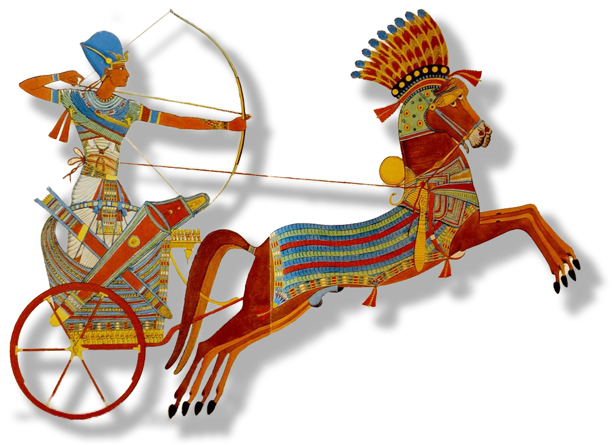
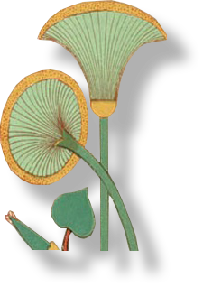
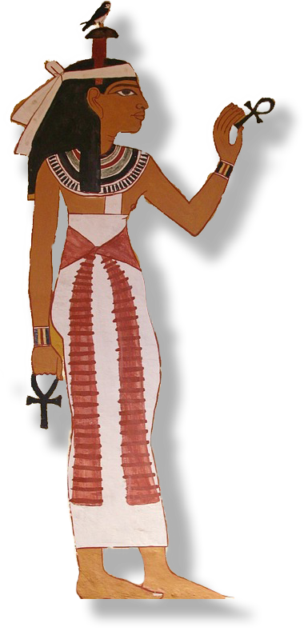
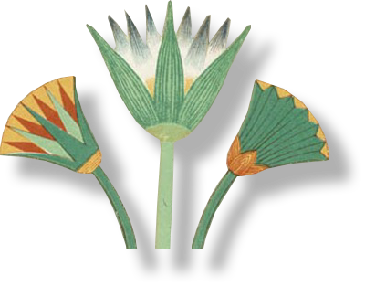
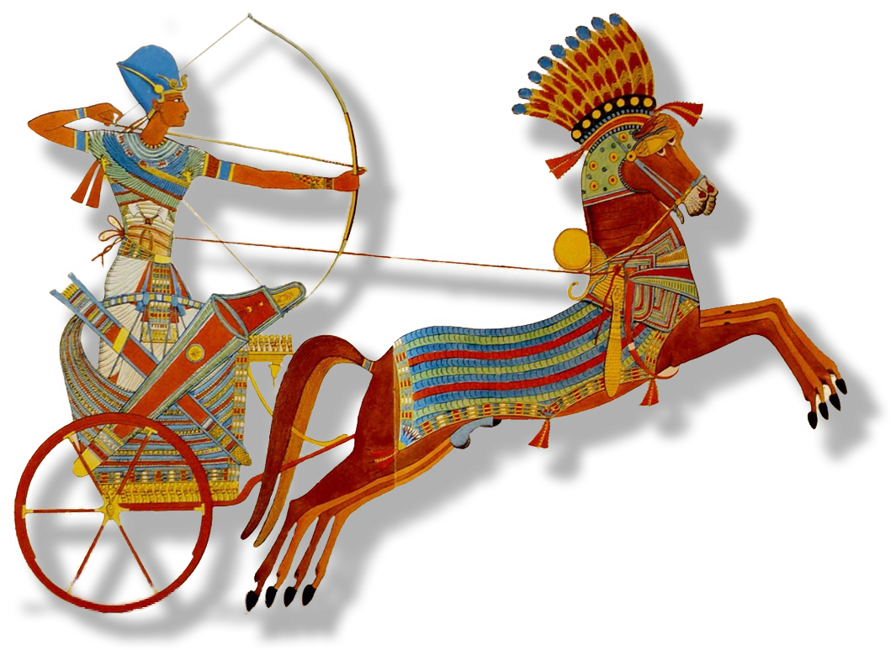
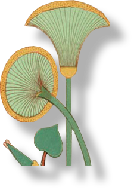
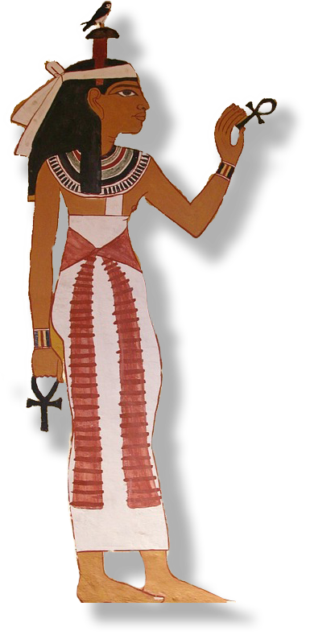
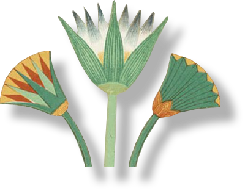

{kind=link}
#/media/File:Chichen_Norte.JPG){kind=link}

{kind=link}
#/media/File:Dresden_codex,_page_2.jpg){kind=link}
.jpg){kind=link}
 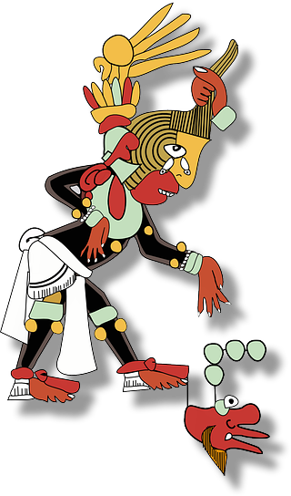
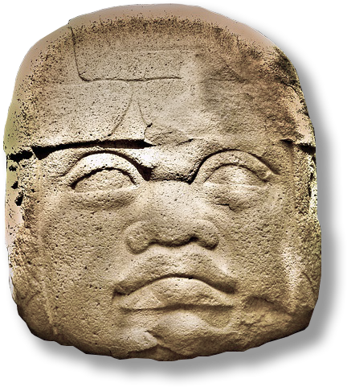
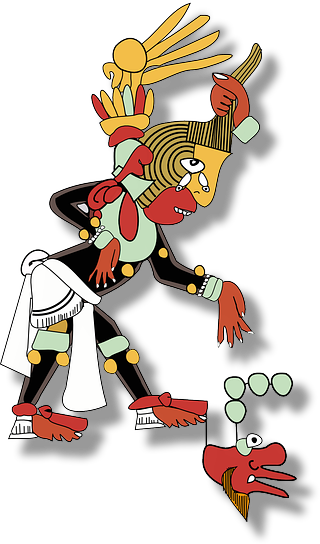
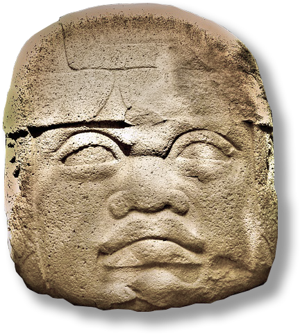
{kind=link}
{kind=link}
{kind=link}
{kind=link}

{kind=link}
{kind=link}
{kind=link}
{kind=link}
{kind=link}
{kind=link}
{kind=link}
),_Parshvanatha,_Neminatha,_and_Mahavira)_LACMA_M.85.55_(1_of_4).jpg){kind=link}
{kind=link}

{kind=link}

{kind=link}
{kind=link}
{kind=link}

{kind=link}
{kind=link}
{kind=link}
{kind=link}

{kind=link}
{kind=link}
{kind=link}
{kind=link}
{kind=link}
{kind=link}
{kind=link}
{kind=link}
.png){kind=link}
{kind=link}
{kind=link}
{kind=link}